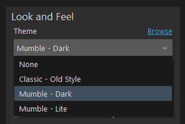
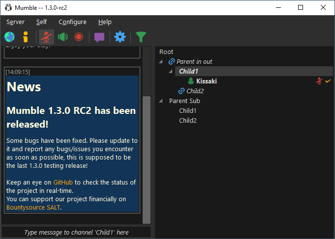
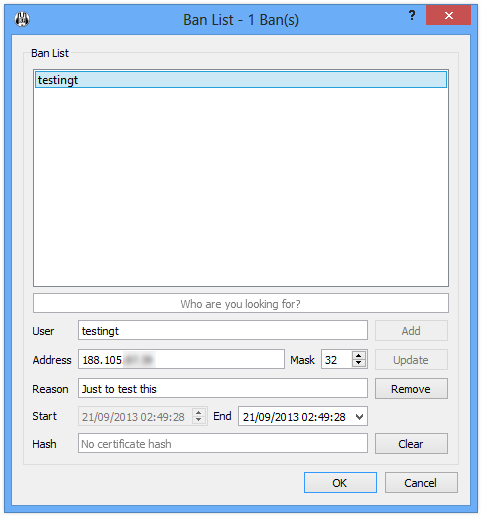

We are pleased to announce the release of Mumble 1.3.0 ; a backwards-compatible, stable feature release.
About Mumble
Mumble is a free and open source, low latency, high quality voice chat application. Originally intended for gamers, and the first to establish true low latency voice communication over a decade ago. But Mumble finds good use in many environments .
We heard from users who record podcasts with our multi-channel audio recorder, players seeking realism with our positional audio in games, Eve Online players with huge communities of over 100 simultaneous voice participants (I bet they make good use of our extensive permission system 😄), the competitive Team Fortress 2 community making us their required voice communication platform, hobby radio transmission users, and a variety of workplaces adapting Mumble to fit their needs - be it on-head mobile devices or communicating across countries or into airplanes.
Administrators appreciate Mumble for being able to own their and their users data . Some make use of the extensive permission system for complex scenarios (separating two groups but leaders being able to talk to both anyone?). Some love to provide their users with additional functionality with scripts making use of server APIs, or host music bots and the like that connect to the server. Those that have an existing user database often make use of authenticators to allow authenticating with existing account login data.
It has been almost ten years since the last feature release 1.2.0, which has received a few bug and security fix releases since, up to version 1.2.19 in January 2017.
But development for the 1.3 feature release never stopped.
You were able to use the new features and improvements in our very usable development snapshots. Unfortunately we were not able to provide an actual, official feature release within these years, so quite a while ago we generally recommended users to use the 1.3 development snapshots – because the stable 1.2 versions were so far behind the development state.
Over 3.000 changes (or “commits”) make up this release compared to our previous stable version 1.2.19. These changes include over 1.600 first-parent commits.
Creating release notes for this number of commits and of such a long time span was its own challenge , and we may post a follow-up blog post about that process.
But without further ado: To download the new version visit our new Website download page for the huge list of changes in categorized, expandable release notes read on .
Release Highlights
In this section highlight just a few changes. A more comprehensive list follows in the Release Notes after this section.
New Design Themes
A lot of work went into improving what and how different designs for the client can be created, and the creation of our new Lite and Dark themes .
Theme select options
Lite Theme Dark Theme
Classic Theme Features
Individual user volume adjustment (local)New bindable shortcut for changing transmission modes (voice activation, push to talk, continuous)
New optional toolbar entry to select transmission modes (voice activation, push to talk, continuous). Needs to be activated in Configure -> Settings -> User Interface -> Show transmit mode dropdown in toolbar.
Windows clients report full operating system string instead of only the version number. For example:
Dynamic Channel Filtering
The dynamic channel filtering enables you to effectively navigate big mumble servers with lots of users and channels.
You can toggle the filter by pressing the filter icon in the icon bar or by pressing [Ctrl+F].
By default the filter will hide all empty channels on the server from your channel tree.
Additionally you can right-click channels and add them to your explicit filter list . If the dynamic filter is enabled channels on this list will be hidden even if users are currently residing in them.
Server List
Added two new settings:
Option to disable the interactive add and edit action in the connect dialog.
Option to disable public server list
Audio
Mumble can be configured to locally lower volume of other users while you talk if you have the "Priority Speaker" status. This is off by default and can be enabled in Configure -> Settings -> Audio Output
Text to Speech support on OS X Mavericks
Multichannel recordings are synchronous even after several hours
PulseAudio monitor devices can be used as input devices
Overlay
Support for DirectX 11
An optional clock (current time) in the overlay
The position of the FPS counter and clock are now configurable (just like the user list)
Both settings can be set through configuration files only ''(on Linux and Mac OS X)'', within the Windows registry or in a mumble.ini (see [[Mumble Portable]]).
Skinning
There are new icons available:
self_comment.svg – the "set comment" button in the toolbar
filter_on.svg – activated channel filter in the toolbar
filter_off.svg – deactivated channel filter in the toolbar
priority_speaker.svg – the status icon for a user with priority speaker
For Administrators
Improved user management
User List
To improve the administration of servers with a lot of users Mumble 1.3.0 ships with an improved userlist manager in the client.
The new manager displays the username, and if the server is version 1.3.0 or higher the time since the user was last seen and the channel the user was last seen in.
You can sort the display on all those values and apply filtering by username and/or time since the user last joined the server to quickly find the user you want to edit.
The new interface allows renaming users as well as (batch) deletions.
Renaming a user in the user list no longer requires the user to disconnect and reconnect in order to use the new name.
Improved Banlist

With the improved banlist you can add, search, view and edit existing bans much easier than in previous versions of Mumble.
Avatar handling
An admin can now remove the avatar of a user.
Client RPC subcommand
The Mumble client can be controlled through SocketRPC . See the RPC subcommand documentation for details.
Logitech G-keys
Support for Logitech G-keys has been added. You may need to follow the Logitech G-keys|the instructions .
Mumble 1.3.0 Release Notes
This change log lists changes from Mumble 1.2.19 to Mumble 1.3.0.
We may extend this post with a few featured highlights, or improvements to the change list and details to individual items.
Changes are categorized into Features, Improvements, Bugfixes, and code related changes.
On the second level, changes are grouped into related changes, or into “various changes” groups.
Changes are prefixed according to who it affects (e.g. the end user, or a server administrator), and what functionality or area it relates to.
Group details can be expanded and individual commits can be explored. Although the overview listing should give enough information for normal users. The linked commits are mainly for traceability, reasoning, and completeness-checks.
The affected user prefix separates the admin user into three tiers:
T1 = Tier 1: Using the Mumble client in GUI administration features.
T2 = Tier 2: OS lifecycle management, server-local command line control, Process control, meta-servers (one process multiple servers)
T3 = Tier 3: Scripting via API, etc
Features (64 groups)
[User] Support per user volume adjustment
[User] Support attenuate others on priority speaker
Our priority speaker functionality offers some control over busy talking for marked individuals; namely lowering the volume of others when the priority speaker talks so you can hear the priority speaker over the others.
Pull Requests: None
Commits:
29a65c66 29a65c66 : AudioOutput: add an 'attenuate others' option for priority speakers.
[User][Settings] Support restarting Mumble client to apply setting changes where this is necessary (theme)
Pull Requests: None
[User] Support saving images from chat log
Pull Requests: None
Commits:
b0c9521e 8722bdd0 56fc9de7 b0c9521e : Add saving of images from chat log8722bdd0 : Use a lossless image format when saving chat log images that do not have a file extension56fc9de7 : Remember the last directory used for saving images from the chat log
[User][Theme] Provide official themes (dark, lite and classic) and improve theme-ability
[User] Support sending clipboard content to chat
[User] Allow Prefilling Add Server Dialog With HTTP URLs
Commits:
3eae0dc6 3eae0dc6 : Merge PR #3182: Allow Prefilling Add Server Dialog With HTTP URLs
[User][UI] Support channel filtering
Pull Requests: None
[Client] Distribute x64 (“64 bit”) version
Supporting a new architecture can be quite a bit of work. We have implemented various spawner processes for adequate Overlay and Positional Audio support, and moved the main client application into a separate assembly. See also the corresponding sections for [PositionalAudio] and [Overlay].
Pull Requests: None
Commits: None
[Client] implement lock file mechanism for Windows
Pull Requests: None
[User][Removed] Drop support for external images.
Loading external images without a proxy (e.g. through the server) is a privacy concern, amd less control over what is downloaded. By using external links users could have been tracked.
Commits:
31254397 31254397 : Merge PR #3168: Log: remove support for external images.
[User][PositionalAudio] Add x64 (64 bit) support
Commits:
769855b4 19efac30 a0247d71 9345abed ec3120c1 51af7852 f28e9b73 f63d834c ee1a6718 30ec38da b96bd072 769855b4 : Use set the 'os' query parameter to 'WinX64' when doing version checks and plugin updates on Windows/amd64.19efac30 : plugins: temporarily disable game plugins on Windows/amd64. the 'link' and 'manual' plugins are still built.a0247d71 : plugins: enable all plugins for the x64 build.9345abed : plugins: limit win32-specific plugins to win32.ec3120c1 : installer: distribute all plugins for Windows x64 build.51af7852 : Merge PR #2354: plugins: add arch-specific mumble_plugin_win32.h variantsf28e9b73 : Merge PR #2349: plugins: update memory addresses retrieval to use procptr32_t/procptr64_t.f63d834c : plugins: allow getModuleAddr() to enumerate 32-bit modules in WoW64 mode.ee1a6718 : Merge PR #2442: plugins: allow getModuleAddr() to enumerate 32-bit modules in WoW64 mode.30ec38da : Merge PR #2510: mumble/plugins: Rename Win32 headersb96bd072 : Merge PR #2607: plugins: Build x64 ones only when the target is x86_64
[User][PositionalAudio] Linux
[User][PositionalAudio] Sub Rosa
Pull Requests: None
[User][PositionalAudio] Quake Live
[User][PositionalAudio] GTA V
Commits:
f38363f2 44ea8c86 f4ca0cf2 046e0ca2 48ad19e4 d7b26dd9 501651b1 69defe51 234cbddc f38363f2 : Merge PR #2310: Positional Audio support for Grand Theft Auto V44ea8c86 : Merge PR #2315: Add GTA V plugin to the build and to the installer.f4ca0cf2 : Merge PR #2345: plugins/gtav: Plugin update for game's latest version046e0ca2 : Merge PR #2384: plugins/gtav: Support for retail version48ad19e4 : Merge PR #2423: plugins/gtav: update plugin to work with version 1.35d7b26dd9 : plugins/gtav: update game_name memory addresses501651b1 : plugins/gtav: update plugin to work with version 1.37 (Steam only)69defe51 : Merge PR #2953: plugins/gtav: update plugin to work with version 1.38 (Steam)234cbddc : Merge PR #2977: plugins/gtav: update plugin to work with version 1.38 (Retail)
[User][PositionalAudio] Final Fantasy XIV
Commits:
8bbb34d7 0bc6d7d4 acd664a0 8bbb34d7 : Merge PR #2653: Add plugin for Final Fantasy XIV0bc6d7d4 : Merge PR #2672: installer: add ffxiv plugin to the installer.acd664a0 : Merge PR #2673: ffxiv_x64 Plugin: Add a plugin for Final Fantasy XIV DX11/x64
[User][PositionalAudio] Battlefield1
Commits:
c1cd99e7 e9a34bdf 30c779ca c553e046 4d3d4d86 50540fdc 46fb4054 c1cd99e7 : Merge PR #2581: Positional audio support for Battlefield 1e9a34bdf : Merge PR #2583: Fix BF1 PA plugin Windows installer integration30c779ca : plugins/bf1: update plugin to work with version 1.0.9.53998c553e046 : Merge PR #2603: plugins/bf1: better squad pointer4d3d4d86 : plugins/bf1: update plugin to work with version 1.0.47.3057050540fdc : Merge PR #3003: plugins/bf1: update plugin to work with version 1.0.49.2889046fb4054 : Merge PR #3077: plugins/bf1: update plugin to work with version 1.0.49.52296
[User][PositionalAudio] Battlefield2: Support ingame squad and voice status identity
Commits:
ffa3be97 ffa3be97 : Merge PR #3067: plugins/bf2: extend identity with in-game VoiP state and selected squad
[User][PositionalAudio] Rocket League
[User][PositionalAudio] Battlefield 4
[User][PositionalAudio][Removed] Removed Star Wars Online support due to lack of maintainer
[User][Overlay] Support DirectX 11
[User][Overlay] Support Clock in Overlay
Pull Requests: None
[User][Overlay] Configurable FPS and clock position
Pull Requests: None
[User][Overlay] Add overlay launcher filter
[User][Overlay] Simultaneous x86 and x64 process support
[User][Overlay] Make "no-overlay" option available also on Windows
Pull Requests: None
[User][Overlay][Removal] Remove usable Mumble client in Overlay
Commits:
ad6acf22 4f87be8a ad6acf22 : GlobalShortcut_win, mumble.pro: remove use of HardHook in GlobalShortcut_win.4f87be8a : Merge PR #3204: GlobalShortcutWin: remove code related to the in-overlay Mumble client.
[User][Settings] Add various configurable message types
Commits:
f0fc66b6 46cb8a37 07a142d1 651e4d0d 2ad8c651 1098afcc 07c8e00e 91f5e1cb 6ed06bdd f0fc66b6 : Self muted/deafened message seperated into self muted, self unmuted, self deafened, self undeafened.46cb8a37 : Add `UserRenamed` `MsgType`07a142d1 : Include actor when performing a user rename651e4d0d : Merge PR #3349: Add configurable "You joined channel" and "You have been moved to channel by..." messages2ad8c651 : Merge PR #3403: use user leave message when user disconnects and is in the same channel1098afcc : Merge PR #3426: Messages: revamp channel join/leave logic and add "User connected and entered channel." message07c8e00e : Merge PR #3442: Add configurable "User connected and entered channel" and "User left channel and disconnected" messages91f5e1cb : Merge PR #3451: Add configurable private text message notification6ed06bdd : Merge PR #3639: Messages: show "You moved user to channel" message also when the user is not in/moved to own channel
[User][Settings] Add per-message-type setting to toggle window highlight (if not active)
Commits:
ce8fd36d ce8fd36d : Merge PR #3354: Add per-notification setting to toggle window highlight (if not active)
[User][Settings] Drop expert mode
The expert mode in configuration was initially introduced to make the settings easier and clearer to read, while allowing more proficient users to show all settings.
Commits:
ddd47649 ddd47649 : Merge PR #2709: Add setting to configure user dragging
Commits:
4481729e 4481729e : Merge PR #3098: AudioInput, Settings: add 'audio/inputchannelmask' setting for selecting which mic channels should be mixed.
[User][Settings] Settings: expose 'wasapi/role' setting to allow users to set WASAPI role
Commits:
d66eeebe d66eeebe : Merge PR #3118: WASAPI, Settings: expose 'wasapi/role' setting to allow users to set WASAPI role.
Commits:
bf90fadd bf90fadd : Merge PR #2747: Allow hiding Muble from the menu without minimizing
[User][Audio] Support machine learning noise suppresion RNNoise (Xiph)
Commits:
e54f60f4 17816971 e3ad9552 f6a6b661 e54f60f4 : Merge PR #3427: RNNoise17816971 : Merge PR #3453: AudioInput: calculate audio statistics after RNNoise processinge3ad9552 : Merge PR #3454: INSTALL: document "no-jackaudio" optionf6a6b661 : Merge PR #3456: Add "--jackname" and "--jn" parameters to set a custom Jack client name
[User][Audio] Support JACK audio interface
Commits:
1bf549d6 08d9b9c7 09c71b4d d3cf441c d7378675 1bf549d6 : Merge PR #3396: Add JACK Audio support08d9b9c7 : Merge PR #3435: JACK: don't start the server if using another backend, create only required ports09c71b4d : Merge PR #3437: Settings: enable JACK auto-connect option by defaultd3cf441c : Merge PR #3490: JackAudio: change disconnect_ports() so that it uses stored ports instead of retrieving them using jack_get_ports()d7378675 : Merge PR #3683: JackAudio: fix segmentation fault, revamp initialization logic
Commits:
a297a24b 4f4e5ac2 a297a24b : Merge PR #2374: ViewCert: use QChar::fromLatin1 instead of QChar::fromAscii.4f4e5ac2 : Merge PR #2380: ViewCert: show certificate's SHA-256 fingerprint.
[Linux] Support logging to syslog
Pull Requests: None
[Client] Support versioned Mumble directory hierarchy
Pull Requests: None
Commits:
83da9564 1250b041 e6b17b56 83da9564 : Add MumbleApplication::applicationVersionRootPath().1250b041 : Use MumbleApplication::applicationVersionRootPath() throughout Mumble to support a versioned directory hierarchy.e6b17b56 : Add support for running with a versioned root path in mumble.exe.
[Admin T1] Per channel user limit
Pull Requests: None
[Admin T1] Configurable max channels per server
[Admin T1] Show ban message when someone bans
[Admin T2] Support disabling SuperUser login
SuperUser is the initial and fallback administration account every server (and vserver) has. After the password has been set it can not be unset to disable login. This prevents the potential attack surface of the account. If necessary the a password can be generted or set again to be able to use it again.
[Admin T2] Human readable passwords
Depending on the font some characters may look very simlilar and consequently are hard to identify by users (for example 1 and l). By excluding ambiguous characters we generate passwords that cause less frustration in those cases.
Commits:
b046d6f1 9ae2a7f5 b046d6f1 : Merge PR #2890: PasswordGenerator: add new class for generating human-friendly passwords via CryptographicRandom.9ae2a7f5 : Merge PR #2891: ServerDB: use PasswordGenerator class for generating initial SuperUser password.
[Admin T2] Support systemd
Pull Requests: None
[Admin T2][SSl] Configurable cipher suites
Add 'sslCiphers' option to allow server admins full control of Murmur's advertised TLS cipher suites
Pull Requests: None
Commits:
a3f93f78 8ae710b5 a3f93f78 : Murmur: add 'sslCiphers' option to allow server admins full control of Murmur's advertised TLS cipher suites.8ae710b5 : Mumble: add 'net/sslciphers' hidden setting to allow configuring the client's advertised TLS cipher suites.
[Admin T2][SSL] Configurable Diffie-Hellman parameters
Commits:
8bd3f76a 36cb9606 95504874 923d6491 4795ae57 8bd3f76a : Murmur: add support for EDH cipher suites, and for specifying Diffie-Hellman parmeters.36cb9606 : Merge PR #3183: FFDHE: add new class for accessing RFC 7919 Diffie-Hellman parameters.95504874 : Merge PR #3185: Allow users to specify RFC 7919 Diffie-Hellman parameters for the sslDHParams murmur.ini option923d6491 : Merge PR #3184: murmur/Cert: remove auto-generation of Diffie-Hellman parameters.4795ae57 : Fix qFatal message generation in Diffie Hellmann error path
[Admin T2][Server] Support PostgreSQL (Only sqlite remains the strictly supported and recommended one. This is secondary support like MySQL.)
[Admin T2][Server] Support SQLite WAL
Commits:
cad1bac3 cad1bac3 : Merge PR #2794: ServerDB, Meta: add support for SQLite WAL.
Commits:
65909b89 65909b89 : Merge PR #3009: Add option to hide OS information from server ("privacy mode")
Commits:
e913a441 9d4691cb 48f3eb94 e913a441 : Merge PR #3127: Implement new hostname resolving infrastructure9d4691cb : Merge PR #3172: ServerResolver: treat SRV lookups that return NOERROR but no records as errors.48f3eb94 : Merge PR #3268: Fix SRV port bugs in ServerResolver and ConnectDialog
[Admin][GRPC] Add support for GRPC (Remote Procedure Call API for scripting the server)(CURRENTLY DISABLED)
While the Mumble server can be built with it, the default and provided binaries do not have it enabled yet.
Commits:
89097d5a af0b2ecc ec61c2bc 28a8e645 2724ff59 f2cbebdc 1844f214 0e71f799 765f7807 41502bb8 89097d5a : Merge PR #1682: murmur grpc supportaf0b2ecc : Merge PR #3196: Merge murmur.grpc.ini and murmur.iniec61c2bc : Merge PR #3202: scripts/murmur.ini: fix minor typo in gRPC comment.28a8e645 : Merge PR #3298: Update gRPC server to work with recent gRPC versions2724ff59 : Merge PR #3201: MurmurGRPCImpl.h: declare variable for QMutexLocker in RPCSingleStreamCall class.f2cbebdc : Merge PR #3227: MurmurGRPCImpl.cpp: fix typo1844f214 : Merge PR #3301: GRPC: fix deadlock in removeChannel0e71f799 : Merge PR #3684: Set temporary, position, and description in GRPC ChannelAdd765f7807 : Merge pull request #3332 from bontibon/issue-329941502bb8 : Merge PR #3698: fixed setting comment to username instead of updating username
[Admin T3] Add “forceExternalAuth” config option to Murmur
Pull Requests: None
[Dev][Docs] Replace docs folder with Protocol Documentation
The protocol documentation is for anyone trying to communicate with Mumble clients or servers through network packets (rather than through the available APIs).
Pull Requests: None
Commits:
6eecd624 eda74f21 5a09fb4a 65c366ac 88aefca1 6eecd624 : Remove 'doc' directory in favour of https://github.com/mumble-voip/mumble-protocoleda74f21 : Add protocol buffer comments from the old 'doc' directory to the .proto file.5a09fb4a : Improve protocol documentation65c366ac : Fixed connection setup diagram in mumble protocol documentation88aefca1 : Fix protocol documentation for RequestBlob in the .proto file.
Use PBKDF2 for user password hashing
Commits:
88cf21d6 15072a45 88cf21d6 : Merge pull request #1422 from hacst/auth15072a45 : Merge PR #3645: Fix log spacing and typos when setting up the PBKDF2 iteration count
?TODO [Code] Introduce app and exe separation
Commits:
f62db492 7f976ed1 b90b4200 11f92440 289d0d4c aef577f8 d3bacc5a 4de645c2 f62db492 : plugins/manual: only link against mumble_app when doing a static win32 build.7f976ed1 : mumble, mumble_exe: fix overlay self-detection for the mumble_app.dll build.b90b4200 : mumble_exe: fix expansion of baked-in MUMBLE_VERSION.11f92440 : MumbleApplication: introduce getenvQString and use it in applicationVersionRoot.289d0d4c : Merge PR #2838: mumble_exe: when using a versioned root, set the CWD to it.aef577f8 : Merge PR #2917: MumbleApplication.h: Remove additional scope resolution for the "nativeEventFilter()" functiond3bacc5a : Merge PR #3113: mumble_exe: document LoadLibraryEx workaround for mumble-voip/mumble#2837.4de645c2 : Merge PR #3114: mumble_exe: fix typo and simplify comment about LoadLibraryEx bug.
[Dev][MinGW] Support MinGW environment for compilation
Commits:
98349a1b cda06e94 8fc69fe3 7e1fdaad cc4d32fd 4886268b b817d3fd cef23248 4ca6f2cb 4400a807 af903fa2 617975ec 10079ed9 2d895067 98349a1b : Merge PR #2755: plugins: Fix visibility, warnings and errors when compiled with MinGWcda06e94 : Merge PR #2770: mumble_pch.hpp: Change header name capitalization for MinGW on Linux8fc69fe3 : Merge PR #2772: WASAPI.h: Change header name capitalization for MinGW on Linux7e1fdaad : Merge PR #2771: rcc.pri: Fix script path for MinGW on Linuxcc4d32fd : Merge PR #2774: WASAPI.h: Include missing header for MinGW on Linux4886268b : Merge PR #2804: OSInfo.cpp: Fix MinGW compilation warningsb817d3fd : Merge PR #2811: Fix MinGW compilation warningcef23248 : Merge PR #2812: GKey.cpp: Fix MinGW compilation warnings4ca6f2cb : Merge PR #2810: DirectSound.cpp: Fix MinGW compilation warnings4400a807 : Merge PR #2823: GlobalShortcut_win.cpp: Fix MinGW compilation warningsaf903fa2 : Merge PR #2765: python.pri: Fix path search for MinGW on Linux617975ec : Merge PR #2781: mumble_pch.hpp: Improve MinGW compatibility.10079ed9 : Merge PR #2907: Implement support for building Mumble and Murmur using the MinGW toolchain.2d895067 : Merge PR #3270: Assorted MinGW fixes
[Dev][Build] Add Docker image build file
Commits:
cbbc3425 cbbc3425 : Merge PR #3690: Build/package murmur in a docker image
[Dev][Build] Provide AppImage (portable software package technology on Linux)
[SSL][Linux] Support handling multiple OpenSSL versions at the same time
Commits:
13bc12d3 5b82a7a4 13bc12d3 : Merge PR #3109: SSL: remove multi-OpenSSL sanity check.5b82a7a4 : Merge PR #3174: SSL: register OpenSSL threading callbacks when we can't access Qt's OpenSSL.
Various Features
Commits:
fd5a9b12 6a345f54 a5651973 44dc94e9 80f1623b 5b104e09 6c096c31 f3a1a6c7 76b95d1a 012cde52 82c27fef 6ac0553a 755c2905 fd5a9b12 : Add hidden option to disable pubserver list (FR #1120)6a345f54 : Added hidden option to disable add/edit in connect dialog (FR #1120)a5651973 : Add setting 'asio/enable' to allow users to disable ASIO via the Mumble configuration.44dc94e9 : Add optional combobox for transmit mode selection in the MainWindow's toolbar.80f1623b : PulseAudio: allow monitor devices to be used as inputs.5b104e09 : PulseAudio: Add options to disable attenuating applications on other audio outputs and to disable attenuation of loopback modules.6c096c31 : Add Logitech G-key support for use in global shortcutsf3a1a6c7 : Merge PR #2555: Added a DBus method for getting a list of currently talking users.76b95d1a : Merge pull request #2588 from mkrautz/compiler-pri-c++98012cde52 : Merge pull request #2622 from mkrautz/max-in-flight-tcp-pings82c27fef : Merge PR #2644: Add command-line flags for accessing license information for Mumble and Murmur6ac0553a : Merge PR #2698: Add Developer Console to Mumble755c2905 : Merge PR #3604: Add tray menu action to show the main window
Improvements (36 groups)
[Translation] Translation updates
[Settings] Open sound file selection dialog with current path
Pull Requests: None
Commits:
58efe0c5 956a8ca5 aef9ef71 608e8028 c2bbcd57 6f1331b2 0f805335 25b88a74 da12c2bd cbff56b1 b8171226 bc12e8eb 888a459b 8dbc7930 896f6f52 4d005f07 58efe0c5 : GlobalShortcut_unix, Settings: disable XInput2 by default.956a8ca5 : GlobalShortcut_unix: request latest XInput 2 version by default.aef9ef71 : Settings: enable XInput 2 by default once again.608e8028 : GlobalShortcut_win, XboxInput: implement native XInput support in GlobalShortcut_win.c2bbcd57 : Fix XboxInputState being to small for XInputGetStateEx calls6f1331b2 : GlobalShortcutWin: Exclude XInput devices from DirectInput.0f805335 : XInputCheck: add XInputCheck_ClearDeviceCache().25b88a74 : XInputCheck: add documentation for XInputCheck_IsGuidProductXInputDevice.da12c2bd : XInputCheck: add comment at the top of the file describing development practices and origin of the code.cbff56b1 : XInputCheck: fix missing file reference in the README.b8171226 : GlobalShortcutWin: add issue references to comment describing recent Windows 10 DirectInput/XInput breakge.bc12e8eb : XInputCheck: add string.h and stdlib.h includes to xinputcheck.cpp.888a459b : GlobalShortcutWin: fix memory leak of 'di' in new XInputCheck code path.8dbc7930 : GlobalShortcut_win: only poll XboxInput if there are XInput devices present.896f6f52 : Merge PR #2491: GlobalShortcut_win: log product GUID when excluding an XInput device from DirectInput processing.4d005f07 : Merge PR #3038: Fix "Enable XInput" What's This text formatting
[Accessibility] Improve minimal mode window
Pull Requests: None
Commits:
47a81f7b 47a81f7b : Do not use non-standard tool window for minimal mode.
[GUI] Various GUI improvements
Commits:
c2be406a 10abf369 be4ae5b2 4a99cde5 46462cd7 80602a3e 455ab192 a4e859e7 c2be406a : Merge PR #2408: TextMessage, RichTextEditor: accept TextMessage dialog when Ctrl-Enter is pressed.10abf369 : Merge PR #2411: MainWindow: allow using F6 to switch between MainWindow's main widgets.be4ae5b2 : Merge PR #2419: MainWindow, CustomElements: implement proper Backtab/Shift-Tab behavior for MainWindow::qteChat.4a99cde5 : Merge PR #2446: AudioWizard: always use ClassicStyle.46462cd7 : Merge PR #3020: Cert: use classic wizard style for the Certificate Wizard.80602a3e : Merge PR #3088: add trailing ellipses to each main window action text that open a window or dialog455ab192 : Merge PR #3147: Make comparison case-insensitive in ConnectDialog.cppa4e859e7 : Merge PR #3156: Add toggle to lock layout when in custom layout mode
[GUI] CertWizard: Password requirement notice on import
[Settings] Show language code in language selection
Pull Requests: None
Commits:
2438f31e 2438f31e : Fix Esperanto entry in language list and display cc in parentheses behind name.
[User][Text-to-Speech] Unix: Use Mumble's language setting, or the system locale for TTS language
Pull Requests: None
Commits:
1aae05eb 1aae05eb : TextToSpeech_unix: use Mumble's language setting, or the system locale for TTS language.
[Overlay] Change default overlay avatar alignment to centered
Pull Requests: None
Commits:
ed2bf499 ed2bf499 : Change default overlay avatar alignment to centered as per #1325
[Overlay] Overlay blacklist default rules
Commits:
207f66ce 2c0c0edd e5b6dac2 f1dbd922 7f69c512 df448598 f732ec4c 31abc89c ef72e3ea 95222b96 6e820e8d 623d2afa b7ad9d66 15d18eea 14648736 248859cf 207f66ce : Add entries to default overlay blacklist2c0c0edd : Add Microsoft Visual Studio to overlay blackliste5b6dac2 : Add Spotify to the overlay blacklist. It can cause Mumble to freeze/hang for multiple seconds.f1dbd922 : Ensure up-to-date built-in overlay blacklist.7f69c512 : Add Far Cry 4 to the blacklist due to crashes with the x64 overlay.df448598 : Add EpicGamesLauncher to default overlay blacklistf732ec4c : Add dwm and MouseKeyboardCenter to overlay blacklist31abc89c : Add outlook to overlay blacklistef72e3ea : overlay: remove Far Cry 4 from the default blacklist.95222b96 : Merge PR #2396: overlay: ensure the whole Microsoft Office suite is blacklisted.6e820e8d : Merge PR #2912: overlay_blacklist.h: add "kodi.exe"623d2afa : Merge PR #2973: overlay: add gw2-64.exe to the default launcher-filter program whitelist.b7ad9d66 : Merge PR #2982: overlay: add GTAVLauncher.exe to the default launcher-filter program blacklist.15d18eea : Merge PR #2985: overlay: treat launchers as implicitly blacklisted programs.14648736 : Merge PR #3046: Add itch.exe as known overlay launcher248859cf : Merge PR #3049: overlay: add LaunchPad.exe (Daybreak Games's launcher) to the launcher list.
[Overlay] Various improvements
Commits:
fd782c3c bb0ccc46 8e333b31 82ca8008 950fa156 fd782c3c : Overlay, OverlayClient: add PID and process name diagnostics to 'Dead client detected' notice.bb0ccc46 : Add restart limiter to OverlayPrivateWin to avoid bombing the system with process spawns.8e333b31 : OverlayPrivateWin: add qFatal calls for invalid states.82ca8008 : Follow XDG directory spec for RPC socket & overlay pipe950fa156 : Merge PR #2365: OverlayClient: hide QGraphicsPixmapItems when FPS and time are disabled instead of setting an empty QPixmap.
[PositionalAudio] Borderlands 2 (BL2)
[PositionalAudio] Left 4 Dead 2 (L4D2)
[PositionalAudio] World of Warcraft (WoW)
[PositionalAudio] Battlefield 2142 (Bf2142)
Commits:
a935808b a935808b : Merge PR #3040: Update BF2142 plugin, adding identity support
[PositionalAudio] Garry’s Mod
Pull Requests: None
[Admin T1] Userlist improvements
Improved UI, search functionality, multi-select, last-seen, inactive-for-timespan filter, live user renames,
Pull Requests: None
[Admin T1] Allow admins to clear user avatars/textures.
Pull Requests: None
[Admin T1][Banlist] Improvements
Pull Requests: None
[Admin T3]
Pull Requests: None
[Admin T3][SocketRPC]
Commits:
9b4ee063 a6aba12b 9b4ee063 : Merge PR #2682: main, SocketRPC: add 'togglemute' and 'toggledeaf' RPC commands.a6aba12b : Merge PR #3066: SocketRPC: ensure pipe paths match up.
[Admin T3][Ice]
Commits:
a436774b d8889f8b 33f295f0 02881201 4fe90ae6 f90ab07c e03989ec 88d41e10 f00b5a3f bc111854 5026c479 12cb8272 c22393e9 f491aac4 85d62398 649537ff 3313f9b5 b595d650 a436774b : Update slice path for Ice 3.5.0d8889f8b : Extract Ice compilation to murmur_ice lib33f295f0 : Update .gitignore to point to the new location of Ice-generated files.02881201 : Don't expose SSL secrets over Ice/D-Bus.4fe90ae6 : Merge PR #2909: MurmurIce: avoid NUL bytes in Ice messagesf90ab07c : Merge PR #3211: [BUILD] ZeroC Ice 3.7 compatibilitye03989ec : Merge PR #3240: Fix travis osx build; Add Ice 3.7 support88d41e10 : FR #1096 by Henry Fallon: Corrections to string, Add missing comments in Murmur.ice and add Missing MainWindow::msgReject in Clientf00b5a3f : Merge pull request #180 from tgurr/ice-3.5.1bc111854 : Update murmur.ini and scripts to disable dbus by default and enable ice.5026c479 : Fix ice documentation mistake12cb8272 : Fix Murmur.ice path lookup for ermine and osxc22393e9 : Messages, Murmur.ice: make username checking case insensitive throughout Murmur.f491aac4 : Merge PR #2221: Murmur.ice: add updateCertificate() method.85d62398 : Merge PR #2880: MurmurIce: remove ad-hoc RSA checks in updateCertificate with Server::isKeyForCert().649537ff : Merge PR #2938: MurmurIce.cpp: Fix comparison between signed and unsigned integer3313f9b5 : Merge PR #2956: MurmurIce: fix signed/unsigned comparison between string size and std::numeric_limits.b595d650 : Merge pull request #2617 from mkrautz/query-extra-sliceflags
[Server] Change sqlite client synchronization mode from OFF to NORMAL
To reduce risk of data corruption in unstable environments. Details and reasoning is in the commit message.
Commits:
53c5a917 53c5a917 : Merge pull request #3255 from hacst/clientdbdurability
[installer]
Commits:
442b46e8 1b3f1990 0e447428 8aafb6ce c897c564 9ecdc0fa 77314f40 9482cc87 be8f9325 f657478f 8ffe90a6 1e30fc6e 840a31de 4eba193f 17d95c07 1749ef46 c9f170e8 a88b3162 29525cba 0128e7dd 239b89c7 5a8c7f50 3d466346 9222b9af c19ec3f8 bbd93e11 a5724cf7 a3ad0c54 6be0de43 ec87aa6b 220f2720 79f18853 d13a877f c3ebc173 82d385f6 012429cb 81f36bbf 5bbd804e 346702fc e3e32633 c19ac8c0 42b43ee7 91601a1f 7c08da0b 9f5b01b9 fcc2a390 e7282052 442b46e8 : installer: automatically build a static installer when in the win32-static build env.1b3f1990 : installer: update Product.wxs to refer to the VC120 CRT.0e447428 : installer: change InstallerVersion to 405 to be able to merge with MSVS2013 VCRedist.8aafb6ce : installer: automatically embed VCRedist 12.0 DLLs when env var MumbleNoMergeModule is set.c897c564 : installer: drop InstallerVersion back to 300. add note about InstallerVersion requirements for VC12 redist to MergeModuleDir setting.9ecdc0fa : installer: fix ability to use a custom OpenSslDir when building the Win32 installer.77314f40 : installer: add the ability to use a custom bzip2 directory in the Win32 installer.9482cc87 : installer: add x64 platform to the installer.be8f9325 : installer: additional update to the .sln file for x64.f657478f : installer: fix whitespace issue in Plugins.wxs.8ffe90a6 : installer: make WiX produce a working x64 installer.1e30fc6e : installer: remove vccorlib120.dll from the installer.840a31de : macx/scripts: fix osxdist.py and build-installer-overlay to work in a source tree path with spaces in it.4eba193f : Add "Uninstall" shortcut to start menu folder with windows installer.17d95c07 : Update URLs in installer and add a comment.1749ef46 : Resolve installer upgrade issues.c9f170e8 : Revert recent installer changes as they create more issues than they fixed.a88b3162 : installer: distribute D3DCompiler_47.dll for our Windows x64 builds.29525cba : installer: distribute D3DCompiler_43.dll for our Windows x86 builds.0128e7dd : installer: include both x86 and x64 variants of D3DCompiler_XX.dll.239b89c7 : installer: rearrange codec components in the installer.5a8c7f50 : Update the Mumble installer to work with a versioned directory hierarchy.3d466346 : installer: force uninstall before install.9222b9af : installer: remove non-static installer logic.c19ec3f8 : installer: remove support for the Intel compilers.bbd93e11 : installer: remove support for merge modules.a5724cf7 : installer: do not bundle D3DCompiler_43.dll and D3DCompiler_47.dll with Mumble anymore.a3ad0c54 : installer: use 'The Mumble Developers' as ProductManufacturer in the Windows installer.6be0de43 : installer: add 'rl.dll' to Plugins.wxs.ec87aa6b : Merge PR #2286: Add BF4 x86 to the build and to the installer.220f2720 : Merge PR #2434: installer: remove manual.dll from the installer.79f18853 : Merge PR #2531: installer: use MSVC2015 runtime.d13a877f : Merge PR #2551: Revert PR #2531: installer: use MSVC2015 runtime.c3ebc173 : Merge PR #2776: installer: use VC140 CRT.82d385f6 : Merge PR #2780: installer: use "vcruntime140.dll" instead of "msvcr140.dll" for vcruntime140.dll's component ID.012429cb : Merge PR #2818: installer: ship app-local copies of UCRT DLLs.81f36bbf : Merge PR #2817: installer: use WiX from buildenv.5bbd804e : Merge PR #2835: installer: don't ship dbghelp.dll anymore.346702fc : Merge pull request #3187: installer: revert "installer: force uninstall before install."e3e32633 : Merge PR #3369: installer: only use WiX toolset from MUMBLE_PREFIX if the MUMBLE_PREFIX env var is set.c19ac8c0 : Merge PR #3432: Mark installer as AppVeyor build artifact42b43ee7 : Merge PR #3443: installer: remove unused variables91601a1f : Merge PR #2902: installer: quote GUIDs in Settings.wxi.7c08da0b : Merge PR #3481: installer: copy rnnoise.dll9f5b01b9 : Make the Windows install create desktop shortcuts again.fcc2a390 : Add property to enable "Launch app at exit" by default.e7282052 : Do not allow installing x86 and x64 side by side.
[Dev][Protobuf]
Commits:
4fe07a50 4fe07a50 : Merge PR #2742: Mumble.proto: explicitly use proto2 syntax.
[Opus]
Commits:
198f45a7 d322ad16 c148aafb 61391ae4 6918c9de 5fa918be 54ec5953 b2f5bd09 e8e7ed32 9295be41 7cb6bb17 2eaed7eb 2fb5ee70 cada6775 e0ee016e 5f370a8c 1e3d6a50 30051f98 ff9086e3 338f0240 faa67303 8ebd51a6 da8a95e5 e82debb8 c722cd10 ec0ed4ef 282d672c e981c61e 198f45a7 : Update Opus to v1.1 beta released322ad16 : Update Opus to 1.1-rcc148aafb : Update Opus to 1.1-rc361391ae4 : Update to Opus 1.16918c9de : scripts/release.pl: add dirs new to Opus 1.1 to fix from-tarball build.5fa918be : Fix accidental CBR limit for large Opus frames.54ec5953 : Update Opus to version 1.1.1 betab2f5bd09 : Update Opus submodule to include our workaround for MSVC2013.3+ x64's bad sqrt auto-vectorizer codegen.e8e7ed32 : 3rdparty: for CELT and Opus, define APPROX_FLOAT if -ffast-math is in CFLAGS.9295be41 : Update Opus to 1.1.1.7cb6bb17 : 3rdparty/opus-build: enable use of SSE and SSE2 intrinsics in Opus on OS X.2eaed7eb : Merge PR #2542: Enable the Opus music encoder2fb5ee70 : Merge PR #2825: Revert 91dc3d39f0 ('Move counter variable in processMsg into Opus condition.').cada6775 : Merge PR #3148: Update Opus to v1.2.1e0ee016e : Merge PR #3431: Create OpusCodec class, similar to CeltCodec, in order to load Opus' functions from a shared library5f370a8c : Merge PR #3464: Fix crash when Opus is not available and add critical error message1e3d6a50 : Merge PR #3646: Build Opus as shared library in static build, copy it into App Bundle30051f98 : Update opus submodule to opus 1.0.2ff9086e3 : opus-build: build as C++ on Unix-like systems.338f0240 : opus-build: revert ff9086e3 and error out if built with CONFIG(sbcelt) instead.faa67303 : Move speex, celt-0.7.0, celt-0.11.0, opus and sbcelt to the 3rdparty directory.8ebd51a6 : mumble.pro: add opus-src/celt and opus-src/include as -isystem headers.da8a95e5 : 3rdparty/opus-build: only enable OS X SIMD for x86-64 (non-universal) build.e82debb8 : 3rdparty/opus-build: re-structure qmake logic for including SSE, SSE2 and SSE4.1 sources into the build.c722cd10 : Merge PR #2695: 3rdparty/opus-src: update to 1.1.3.ec0ed4ef : Merge PR #2696: 3rdparty/opus-build: update verison references in config.h for Unix-like systems to 1.1.3.282d672c : Merge PR #2966: 3rdparty/opus-build: remove unnecessary shared library handling for macOSe981c61e : Merge PR #3450: OpusCodec: add "libopus.so.0" (Linux) and "opus.dll" (Windows) to the library names
[Bonjour]
Pull Requests: None
Commits:
99d37cff dee463ef 6beb46e6 99d37cff : Fix warnings in Bonjour codedee463ef : bonjour: use Qt::AutoConnection for BonjourServiceResolver's QSocketNotifier slot.6beb46e6 : Move src/bonjour to 3rdparty/qqbonjour-src and add its license to the third party license list.
[OSInfo]
Commits:
8f0ae691 1d0b1c86 6d962818 122ed926 9dba18fc 72ef9026 2f886052 0a9c69db fc9dc2e4 8f0ae691 : OSInfo: use full Windows version when version string is user-facing.1d0b1c86 : OSInfo: fix display of Windows service packs in getOSDisplayableVersion.6d962818 : OSInfo: use 'WinX64' as the OS identifier for Windows/amd64 builds.122ed926 : OSInfo: update Windows 10 detection due to kernel version change.9dba18fc : OSInfo: fix OS X version string formatting build error.72ef9026 : Add build number to OS X OSInfo.2f886052 : Merge PR #2447: OSInfo: add Windows 10 displayable version string.0a9c69db : Merge PR #2470: OSInfo: fix new Windows 10 OSInfo to not include NUL values in the displayable version string.fc9dc2e4 : Merge PR #2524: OSInfo: fix implicit size_t conversion.
By default do not build with PortAudio
Commits:
48277cb2 48277cb2 : Merge PR #3338: Build with PortAudio support if the "portaudio" CONFIG flag is specified
Various Documentation Improvements
[User] Improve Connect Dialog
[User][UI] Various Mumble client UI improvements
Commits:
d9d81a99 b2d938ba d3e00dee d58990c3 dd7cc7ca 1375022b 754fc008 d9785f9f 44a08461 ad19d157 9ba92b58 f5affcd4 67ed33f3 e8027bd6 8e195e17 21cd4ddc c1b6110b 9e8a40f6 b5825472 b83316ad 25ceebb3 69cdaee4 e6cde15c 4add9cec 153c0aa9 b5aef4ca fa818bdf cb952e06 dbab0f70 871240e7 4e430f74 5c9a46e9 6cd17bdc a1899695 26c732fb 9b19e609 b9815665 4c82dd5e d9d81a99 : MainWindow: add Cancel button to the "Minimize or Close?" message box.b2d938ba : Messages: use actual username (instead of the ConnectDialog username) in msgPermissionDenied.d3e00dee : Remove 'About' action from tray context menu (#1161)d58990c3 : CertView: do not use Qt::PlainText for qlExpiry - it needs HTML for its expiry warning color.dd7cc7ca : Improve the look of Mumble on Retina Display Macs.1375022b : Make 'Close' the default for the AskOnQuit message box.754fc008 : MainWindow: don't use custom flags for MinimalView - keep standard Close, Minimize and Maximize buttons.d9785f9f : Shows move message if you moved a user from another channel into another channel44a08461 : Show messages for priority speaker statusad19d157 : Display the native language name in the language chooser rather than the locale9ba92b58 : Add user friendly UserRemove message when disconnecting a ghost user.f5affcd4 : Better log message when a user disconnects from the same channel as the client.67ed33f3 : Do not show TTS options when speechd is disabled.e8027bd6 : Output more control channel encryption parameters8e195e17 : Use lookup table for cipher info in 'Connection Info' dialog.21cd4ddc : Show Minimal View status in titlec1b6110b : Reorder server menu9e8a40f6 : Echo -> Echo cancellation in settings dialogb5825472 : Show more information when a banned user connectsb83316ad : Show self mute/deaf, global mute/deaf, prio speaker, user left channel and disconnected states in linked channels.25ceebb3 : MainWindow: only allow layout to be changed via settings.69cdaee4 : MainWindow: only allow toolbar dragging in the 'custom' layout.e6cde15c : Merge PR #2537: Messages: add the prefix ΓÇ£PrivateΓÇ¥ in MainWindow::msgTextMessage().4add9cec : Merge PR #2580: Log information about missing target channel153c0aa9 : Merge PR #2661: Restore green background for strong certificate in UserView (root channel) and ServerView (ConnectDialog)b5aef4ca : Merge PR #2762: MainWindow: don't include 'Hide Mumble' menu item on macOS.fa818bdf : Merge pull request #2824: Indicate push-to-mute in traycb952e06 : Merge PR #2908: Meta: enable both IPv4 and IPv6 if we're unable to query network interfaces.dbab0f70 : Merge PR #2926: Add setting for enabling the Developer menu871240e7 : Merge pull request #2946: By default do not use attenuation4e430f74 : Merge PR #3015: Do not include OS in HTTP user agent depending on privacy setting5c9a46e9 : Merge PR #3068: Added a "Undo Idle action upon activity" setting.6cd17bdc : Merge PR #3154: ServerHandler: ensure only a single connection timeout timer is active at one time.a1899695 : Merge PR #3304: ServerHandler, Settings: add ping interval and connection timeout duration settings.26c732fb : Merge PR #3381: About: allow text in "About" tab to be selected9b19e609 : Merge PR #3548: Disable hiding when system tray not presentb9815665 : Merge PR #3572: WASAPI: print log message when the OS blocks access to the microphone4c82dd5e : Merge PR #3663: Add support for TLS 1.3 in the server information window
[Admin T1][UI]
Pull Requests: None
[Server]
Commits:
97cf80de 4862897a 703f8c7f 33f8448d 0d76ff92 97cf80de : Log IP address on failed login4862897a : Add maximum number of server users to control channel protocol703f8c7f : murmur: exit with status code 1 on fatal error.33f8448d : Murmur: allow both bitmasked version and version string when setting 'suggestversion' via RPC.0d76ff92 : Merge PR #2589: Remove additional word character channel name restriction
Technical changes
Commits:
b422e0a9 b7d9387b d299360f 76475381 445cdf0e 2c0d37f9 de27cd7b b4d48ef4 f32343d5 925587af a2e6cb8c cd8fbbdc a50a120b a1a969e7 b2e37e68 65c25009 6aba9842 2c24ee0f b422e0a9 : Disconnect if for some reason we established a connection to a server without it having a certificateb7d9387b : Be more stringent about properly escaping external strings in HTML ('rich text' in Qt-speak).d299360f : Log, TextMessage: remove $ as an illegal character in our simple URL regexp.76475381 : Change Pulseaudio Role.445cdf0e : Do not set the Mumble process's priority to High on Windows.2c0d37f9 : Switch from old speex to new speex and speexdspde27cd7b : Add RTMP as an allowed protocol for linksb4d48ef4 : Handle input device suspend/recovery gracefullyf32343d5 : Use %zd for ssize_t printing in OSS.cpp.925587af : Unhide mumble.sqlite on non-Windowsa2e6cb8c : Log_unix: always send plain text notifications via org.freedesktop.Notifications.cd8fbbdc : Log_unix: use plain log message for KDE notifications.a50a120b : PulseAudio: fall back to default device if chosen device is no longer present.a1a969e7 : AudioOutput: make playSample() time out after 1 second if no AudioOutput is present.b2e37e68 : Merge PR #2623: Use same source address for UDP packets that is used for TCP packets65c25009 : Merge PR #3039: Updating ServerDB.cpp to check for MySQL, SQLite, and Postgres6aba9842 : Merge PR #3080: murmur/Cert: check for 'Murmur Autogenerated Certificate' prefix instead of explicit version in self-signed cert check.2c24ee0f : Merge PR #3303: ServerHandler: do not send pings unless the TLS handshake has completed.
Bugfixes (14 groups)
[User][Text-to-Speech] Mac OS-X
Pull Requests: None
Commits:
15f76107 c2f75bbd 1bd57bd0 15f76107 : TextToSpeech_macx: reimplement using NSSpeechSynthesizer.c2f75bbd : TextToSpeech_macx: fix 10.4 compatibility.1bd57bd0 : TextToSpeech_macx: selectively conform to NSSpeechSynthesizerDelegate protocol.
[User][Text-to-Speech]
Commits:
d3470c30 d3470c30 : Merge PR #3071: TextToSpeech_unix: lazy initialize speech-dispatcher.
[User][Recorder] Various recorder fixes
Commits:
4c48f72f 9a47e050 fc4e1e3b 8e22f9a2 2ca559b2 fc0e20bb 1c00533b 329dd4ee 4c48f72f : mumble: fix VoiceRecorderDialog build on Apple clang-500.1.70.9a47e050 : Fix multi-track recordings going out of alignment on long recordingsfc4e1e3b : Fix recorder crash due to use after free on user object.8e22f9a2 : Fix "Inverted samples in WAV recording when clipping" #9712ca559b2 : Fix assumptions in alignment fix by reintroducing silence heuristic.fc0e20bb : Fix recording timer not properly displaying in Qt 5 version of Mumble.1c00533b : Incorrectly assumed SF_FORMAT_* subtypes were flags.329dd4ee : Merge PR #2864: Fix crash when using the VoiceRecorder with voice target shortcuts
[User][Overlay] Various fixes
Commits:
10b2d000 b0705324 07e055ff ab12d356 fb56112d 6e9a7e7c ad1ed221 3282887f da004cf8 06e19e6f 03258363 10b2d000 : Prevent overlay from disappearing on D3D DLL reloading.b0705324 : Overlay: Fix address offset07e055ff : Fix overlay regression that in some cases prevented injection into devices in myCreateDevice(/Ex)ab12d356 : Fix handling of failed shared data map creation in overlay.fb56112d : Fix crash of target application due to failures in D10State::init.6e9a7e7c : Disable vertex attrib arrays in overlay_gl (fixes #1298)ad1ed221 : Prevent OverlayClient destructor from hanging on disconnect3282887f : Fix access violations on exit with Overlay activeda004cf8 : Overlay: Resolve undefined behavior06e19e6f : Check for Mesa rather than GLX > 1.2 when determining glXQueryDrawable GLX_WIDTH/GLX_HEIGHT availability.03258363 : Merge PR #3616: OverlayEditorScene: fix object opacity calculation
[User][UI] Various Mumble client UI fixes
Commits:
6e09508e 549c1551 5b3a406f 5b9e899c a6f76100 75976ec2 ed424afa ea165cde 12eac3c6 01a7c583 13c6e582 12563866 abad339f 73a1a98d 2b8fc35f f1e3e096 8ad8812b edaca2ea 7c4fbee2 916dcc0c 491789c2 dc87fa23 cde294f3 f35ef659 78d71984 78604d85 70451a60 a1ff21bd ebf6d23f 2612b67d 6fe55478 612d6b52 23fa9b39 779496c5 b126c4e2 13772c13 f2840525 c45298e4 06d3785a fc13fd1c db4a591c 27189b63 eb63d0b1 97c34f4c 4566f092 ec254df1 d2943a5f 16810dd5 b25db3e1 86197ff2 adcf9fea 1a95cff6 d7ef5178 15f268cf 6e709998 909c13c5 c49301b0 5f43f651 4e839139 6e09508e : Fix path in skin selection dialog549c1551 : Fixed Mumble not remembering hidden dockwidgets5b3a406f : Fixed leaving channel message not being sent when leaving the server5b9e899c : Fix application shortcuts not working in minimal mode.a6f76100 : Fix mixup between printf and QString format character in VoiceRecorder error message75976ec2 : Fix two GUI issuesed424afa : Modify VoiceRecorder to be able to properly abort a recording.ea165cde : Prevent adding to VoiceRecorder buffer after recording was stopped.12eac3c6 : Fix client freeze due to deadlock (#1167)01a7c583 : MainWindow: fix a bug where user/channel actions were enabled even though no user or channel was selected.13c6e582 : Fix incorrect handling of mumble:// links12563866 : Fix auto-reconnect behavior when kicked or banned.abad339f : Remove flawed MX host existence check for cert wizard (#1178)73a1a98d : AudioOutputSample: HTML-escape filename in QMessageBox.2b8fc35f : Fix issue where the chat box does not scroll down when an image is loaded (#1258)f1e3e096 : Fix Qt 5 upgrade broke shutdown ask on quit suppression (#1362)8ad8812b : MainWindow: only trigger link tooltips of Mumble is the frontmost program.edaca2ea : Fix hide in tray default value for Windows 8.17c4fbee2 : Fix hide in tray on windows.916dcc0c : Special case the Unity desktop to also default to not minimize to tray491789c2 : Restore old log timestamp format.dc87fa23 : Fix crash on Linux when trying to configure shortcuts.cde294f3 : Fix assert when viewing legacy user registration listsf35ef659 : Fix compilation failure on OSX due to missing include.78d71984 : Fix typo in AudioEchoWidget regression fix78604d85 : Connect button should be disabled by default70451a60 : Fix #1637 application crashes on Mumble exita1ff21bd : Enable audio to be played during config restart queryebf6d23f : Broadcast RPC-updated welcome text, even when it is empty2612b67d : Don't display "Welcome message: " in client if none was sent.6fe55478 : Don't initialize qsWelcomeText to "Welcome to this server"612d6b52 : Enable bHideInTray only on Windows versions below 7.23fa9b39 : AudioInput: ensure our encoders are reset correctly when using > 1 frame per packet.779496c5 : AppNap: add AppNap support for OS X.b126c4e2 : Merge PR #2478: Log: check for QSizeF::isValid() in Log::validHtml()13772c13 : Merge PR #2472: Remove the message size restriction and fix the validation of imagesf2840525 : Merge pull request #2573 from Kissaki/fix-quickchatbarc45298e4 : Merge PR #2685: MainWindow: disable MainWindow::changeEvent on macOS; it causes Mumble to be non-interactive after restoring from being minimized.06d3785a : Merge PR #2687: Settings: add workaround for macOS "@Variant(" bug.fc13fd1c : Merge PR #2987: ACLEditor: fix tooltip for channel sort order.db4a591c : Merge PR #3007: Fix local volume dialog default size27189b63 : Merge PR #3010: MainWindow: Don't open tooltips when not activeeb63d0b1 : Merge PR #3025: MainWindow: only perform changeEvent's hide-in-tray logic if there is a system tray available.97c34f4c : Merge PR #3084: Fix #3021: Update cert wizard introductory text4566f092 : Merge PR #3198: ConnectDialog: re-arrange lookedUp() code to avoid recursive runloop problem.ec254df1 : Merge PR #3217: GlobalShortcut: fix typo in What's This for 'Enable shortcuts in privileged applications'd2943a5f : Merge PR #3250: Fixed crashing on disconnect16810dd5 : Merge PR #3322: SelfSignedCertificate: fix automatic certificate generatorb25db3e1 : Merge PR #3359: SvgIcon: add new class to work around issues with SVG QIcons in Plasma/KStatusNotifierItem86197ff2 : Merge PR #3473: Messages: set user hash and ID on joinadcf9fea : Merge PR #3474: Log: fix notification being triggered for own messages when TTS readback is enabled1a95cff6 : Merge PR #3559: Messages: fix user registration status not being updatedd7ef5178 : Merge PR #3418: ALSAAudioInput: use snd_pcm_drop() instead of snd_pcm_drain() in class destructor15f268cf : Merge PR #3586: Murmur: fix Denial of Service vulnerability in msgChannelState()6e709998 : Merge PR #3587: Global: fix migrateDataDir() not migrating the data directory909c13c5 : Merge PR #3590: Fix Duplicate Certificates In Chain Viewerc49301b0 : Merge PR #3611: AudioWizard: fix speech sample path5f43f651 : Merge PR #3658: Fixed a bug/typo which prevented audio from playing on user disconnect4e839139 : Merge PR #3603: GlobalShortcutMac: fix segmentation fault in setEnabled()
[PositionalAudio] Fix double free in WASAPI no positional audio fallback code-path
Pull Requests: None
Commits:
fca62787 fca62787 : Fix double free in WASAPI no positional audio fallback code-path
[PositionalAudio] 'manual' plugin on OS X with Qt 5
Pull Requests: None
Commits:
e0b884e6 be75138d 3cc24199 e0b884e6 : mumble: fix dynamic lookup for the 'manual' plugin on OS X with Qt 5.be75138d : mumble, plugins: allow 'manual' plugin dialogs to work OS X when using Qt 5.3cc24199 : mumble, plugins: fix QWidget-for-HWND lookup for the 'manual' plugin.
[GUI] OS-X styling issues
Commits:
66d41efd 66d41efd : Merge PR #2497: Introduce MUComboBox subclass and use it throughout the tree.
[G15]
Commits:
b2f2277d b2f2277d : Merge PR #2430: LCD: add workarounds for LCD drawing on Qt 5.6.
[G15] Disable G15
We see a lot of crashes but have no testers and no way to debug/fix the issue for now
[Admin T1] Various admin fixes
Commits:
44f1055d 44f1055d : Merge PR #2475: Fix for ban reason context menu overlap.
[Admin T2] Configurable message flood protection
[Server] Various server fixes
Technical fixes
Commits:
77233edf 860ec5c7 01a5e83b 63f35d6a 9d668ebc 26829872 b4f50507 e934c1e6 81698118 147be101 0840dd45 b347f7e7 ba1a1897 4bae627e af38fdb8 0763a3dc 8aa2558e d15c3f90 c93b087c aa90739b 6195761d 77233edf : Fixed crash triggered by reading large files referenced in the clipboard.860ec5c7 : Reduce probability for possible race until a real fix can be implemented01a5e83b : PulseAudio: fix access to protected enums in AudioInput and AudioOutput.63f35d6a : PulseAudio: don't call pa_stream_drop() for empty pa_stream_peek().9d668ebc : Use QStandardPaths's DataLocation instead of GenericDataLocation when looking up AppData directory.26829872 : Fix sequence counter becoming invalid for end-of-speech frames.b4f50507 : Fix handling of WAVEFORMATEX in WASAPI backend.e934c1e6 : Fix dual-stack UDP on Windows and improve dual-stack detection81698118 : Fix broken range check in UserListModel::data147be101 : Overlay: fix OS X pid comparison.0840dd45 : Fix OpenSSL intialization.b347f7e7 : fix crash caused by decoding all MIME data formats in RichTextHtmlEditba1a1897 : GlobalShortcut_win: fix access to nxboxinput in EnumDevicesCB.4bae627e : Merge PR #2393: Murmur: fix MurmurDBus::addChannel that was broken by Murmur's new locking.af38fdb8 : Merge PR #2424: Fix updatecheck result logging0763a3dc : Merge PR #2490: GlobalShortcut_win: fix XboxInput button mask in buttonName().8aa2558e : Merge PR #2681: Audio: start qtLastFetch timer in LoopUser to fix local loopback.d15c3f90 : Merge PR #2821: Murmur: fix bad interaction with QDBus and fork().c93b087c : Merge PR #3152: ServerHandler: fix broken hostname validation.aa90739b : Merge PR #3326: Fix error when handling TCP tunneled UDP voice packets6195761d : Merge PR #3422: Fix #3411: Threaded access to Database
Code (25 groups)
[Code] Support modern C++ dialects (C++11)
Pull Requests: None
Commits: None
[Code] Treat warnings as errors
Compiler warnings can often indicate programming errors. Treating warnings as errors forces developers into a stricter implementation environment increasing robustness and consequently reducing issues.
Commits:
c52d1a32 9652f7ff 34cbd3cb a59e166c 355bf07c c52d1a32 : compiler.pri: treat warnings as errors for MSVC (-WX).9652f7ff : compiler.pri: disable warnings-as-errors when MSVC static analysis is enabled.34cbd3cb : compiler.pri: on Windows, treat MSVC linker warnings as errors.a59e166c : Do not enable warnings-as-errors by default.355bf07c : Merge PR #2526: compiler.pri: enable warnings-as-errors by default on Windows.
[Code] Support for newer compiler versions (mainly MSVC)
Pull Requests: None
Commits: None
[Code] Change to a “Mumble Developers” authorship declaration and list individuals in AUTHORS
Pull Requests: None
Commits: None
[Code] Document Mumble server locking strategy
Commits:
ea372dea ea372dea : Merge PR #2276: Document and implement Murmur locking strategy
[Infrastructure] Use our own domain (for service endpoints and web addresses)
This was a switch away from both SourceForge and a separate service domain.
Commits:
40868d47 9db30159 bd49fa59 acb69be2 17ddc1a3 92b82cf2 4ed7af93 40868d47 : Update svg URL(s) from sourceforge to github9db30159 : Usage: use new usage service hostname and endpoint, and use HTTPS.bd49fa59 : CrashReporter: use new service hostname and endpoint for the crash reporter service.acb69be2 : Update WebFetch, and its users, to use the new service hostnames and endpoints, as well as HTTPS.17ddc1a3 : VersionCheck: use updated WebFetch::fetch() for snapshot downloads.92b82cf2 : Merge PR #2943: Murmur: update registration URL to use mumble.info instead of mumble.hive.no.4ed7af93 : Merge pull request #3570 from davidebeatrici/murmur-publist-register-domain
[Text-to-Speech] Implement optional QtSpeech-based text-to-speech backend
Commits:
b9165ae0 b9165ae0 : Merge PR #2939: Implement QtSpeech-based text-to-speech backend
[Overlay][Temporary]
Commits:
8f65051f 8f65051f : Merge PR #3044: overlay: remove ability for overlay to decline being attached to a process.
[Overlay] Various Changes
[PositionalAudio] add magic values for all previously supported ABIs
Pull Requests: None
Commits:
9f327bee 9f327bee : plugins: add magic values for all previously supported ABIs (and a couple of new ones) to mumble_plugin.h.
[PositionalAudio] Various code changes
Commits:
28bb66e0 6a2f2bd8 a20185de b20d9e94 53daac83 e31b7165 ace19170 82a8e7de fc0ab935 f3c64b38 370fae6b ee432795 7a82dc9a 0393ed34 b82b6eb6 c9814aed 6e2f7102 ac134d3a ad10136d dab868e6 e83d01c7 f735a632 173aa7df 308e4f72 e9c558ff e2ad9c05 c936b99d 1be562fe fba1d65b 6bfd0392 28bb66e0 : plugins: disable unhinge functionality for the manual plugin when using Qt 5.6a2f2bd8 : plugins/manual: only depend on gui-private on Windows.a20185de : plugins/manual: use qt_dynamic_lookup instead of static to guard linking against mumble_app.dll.b20d9e94 : Plugins: add support for the 'path' attribute in plugin auto-update XML.53daac83 : mumble_plugin.h: change plugin magic values in preparation of the MSVS 2013 switch-over.e31b7165 : plugins: add missing 'elif'; fix indentation of MSVS2008 'if' block.ace19170 : Add QMAKE_TARGET_BUNDLE_PREFIX to the manual plugin's .qmake.cache file.82a8e7de : Update .gitignore to ignore more of Qt 5's auto-generated plugin importer .cpp files.fc0ab935 : Do not use the qtaccessiblewidgets plugin on Qt 5.4 and greater.f3c64b38 : plugins: move u8 function into the Star Trek: Online plugin.370fae6b : plugins: cleanup a few warnings in the WoW plugin.ee432795 : plugins/sto: fix signed/unsigned mismatch.7a82dc9a : Plugins: remove unused url parameter from fetchedUpdatePAPlugins slot.0393ed34 : mumble_plugin.h: use _M_IX86 instead of (typo'd) _M_X86.b82b6eb6 : Merge PR #2281: Plugins, VersionCheck: don't pass WTD_LIFETIME_SIGNING_FLAG to WinTrust APIs.c9814aed : Merge PR #2370: plugins: build fixes for UT3 and RL plugins to fix warnings-as-errors build6e2f7102 : Merge PR #2431: Move the manual plugin into Mumble itselfac134d3a : Merge PR #2438: ManualPlugin: fix macOS build.ad10136d : Merge PR #2493: Various mumble_plugin.h and ManualPlugin fixesdab868e6 : Merge PR #2503: plugins/link: Initialize wsPluginName to fix the empty shortname probleme83d01c7 : Merge PR #2506: Plugins: fill out pids map on Linux.f735a632 : Merge PR #2513: plugins: use MUMBLE_PLUGIN_EXPORT instead of compiler-specific declarations.173aa7df : Merge PR #2523: Fix various plugin problems that popped up with MSVC2015308e4f72 : Merge PR #2592: plugins: Move NUL terminator to escape functione9c558ff : Merge PR #2611: plugins: use the short form of peekProce2ad9c05 : Fix 2643: Revert "Merge PR #2611: plugins: use the short form of peekProc"c936b99d : Merge PR #2785: plugins: Use tabs for indentation, remove trailing whitespace1be562fe : Merge PR #2790: mumble_plugin_win32_ptr_type.h: Prevent redefinition of "NOMINMAX"fba1d65b : Merge PR #3262: Plugins: Determine correct pointer size automatically, without the need of specific headers and variables6bfd0392 : Merge PR #3272: ManualPlugin.cpp: "MublePluginQt" -> "MumblePluginQt"
[Code] Copyright, licenses and authors
Updates to copyright notices and authors
[Build Infrastructure]
Commits:
2c490d71 00b36863 4323a21b f623a695 64abcb38 97b75de2 44a5bd12 c0d7aad0 0e4070c1 6d2364a8 0d35a9c7 9b2bb226 23b4e859 2a20e165 04b2635d b6d7cf43 f31bbf39 fc1af7a1 38e647fc b7b16cf7 031abd01 71ab5b00 22d18212 c47d95a2 cd23aee8 a7ae275b 64d28eb0 a2bb6596 f1e298aa f05e6571 e9b240c5 3762ad0c 329afa37 74ce74cf c56cb010 7164d3d0 fcd2de6a f47df773 1f430e47 eda8adec 6fe920b2 aa263e92 e596b72b 3e777bab 4eef649e 3315e01e d41923d5 91a8c2c5 dda999ca 8275f77f 6da29305 41613d60 b466faae 64d730a2 5aaf1ed2 37269b15 b2455f24 a092a444 72b4df2a 8dd4b109 1619dbbb fa98f6d6 05f3fa9c 11b5c285 a8d8c136 76eb586f 7bd6b6c7 c0b0f01f 7d649aa5 d74b5b04 82fa0e60 c03d8fcc b2529590 9946dc75 e562e92e a429c763 630a17ba 0fdb7c17 d4c8abd2 a3187870 17cdab70 8c149069 ca8f3dd4 41b26558 2c490d71 : categorize scripts (move example scripts for serverside into subfolders)00b36863 : scripts/release.pl: add vpath special-case for fx11.4323a21b : scripts/release.pl: remove slicer-specific deployment functionality.f623a695 : scripts/mkini-win32.bat: use ',' as substitution delimiter; also fix regexp.64abcb38 : scripts: set +x bit for the files people are expected to run.97b75de2 : scripts: remove old Ermine build scripts.44a5bd12 : scripts: remove unused svn2cl scripts.c0d7aad0 : scripts/gen-mumble_app-qt-def.py: add Python 3 compatibility.0e4070c1 : scripts/updatetranslations.sh: fix shebang to work on systems where bash doesn't live in /bin.6d2364a8 : scripts/qt.conf: remove.0d35a9c7 : scripts/ts2html.pl: remove.9b2bb226 : Merge PR #2246: scripts/generate-CHANGES.py: add Python replacement for 'git2cl.pl'.23b4e859 : Merge PR #2270: scripts/generate-CHANGES.py: fix capture group in gitMailmapLookup's contact regexp.2a20e165 : Merge PR #2280: scripts/generate-CHANGES.py, CHANGES: update script to use commit date rather than author date.04b2635d : Merge PR #2341: scripts/mkini.sh: consider semicolons as comments to fix .ini generation.b6d7cf43 : Merge PR #2670: scripts/mkflags.pl: remove old flags script.f31bbf39 : Merge PR #2959: scripts/rcc-depends.py: fall back to using the absolute path when os.path.relpath() fails on Windows.fc1af7a1 : Merge PR #3012: scripts/appveyor: fix comment about signing/UIAccess in appveyor-build.ps1.38e647fc : Merge PR #3173: scripts/mkini-win32.bat: perform LF -> CRLF conversion.b7b16cf7 : Merge PR #3305: scripts/travis-ci: use our own (Fastly-fronted) mirror of pkg.mxe.info.031abd01 : Merge PR #3315: scripts/travis-ci: fix MUMBLE_NO_PCH checks in script.bash.71ab5b00 : Merge PR #3313: scripts/travis-ci: bump apt timeout in before_install.bash.22d18212 : mumble.pro: add speech-dispatcher 0.8 compatibiltiy.c47d95a2 : src/mumble/mumble.pro: silence some qmake warnings.cd23aee8 : Revert "src/mumble/mumble.pro: silence some qmake warnings."a7ae275b : Make paths in fx11-build.pro case sensitive64d28eb0 : mumble.pro: when using Qt 5, use its bundled icns plugin instead of our own qicnsicon.a2bb6596 : murmur: move murmur.pro's CONFIG(static) and CONFIG(ermine) sections into the unix section.f1e298aa : murmur: fix CONFIG(static) block in the unix section of murmur.pro to not be applied for OS X.f05e6571 : Fix typo in speex-build.pro: '../speex-build' instead of '../speex-srcbuild'.e9b240c5 : mumble.pro: always disable G15 on FreeBSD.3762ad0c : mumble.pro: fix g15 logic for detecting Windows and OS X.329afa37 : main.pro, 3rdparty: remove fx11 from the Mumble build.74ce74cf : mumble.pro: don't find OpenSSL via pkconfig here, it is already found via mumble.pri.c56cb010 : mumble.pro: use separate libsndfile libs on Windows.7164d3d0 : Merge PR #2297: mumble.pro: query pkg-config for protobuf instead of using -lprotobuf.fcd2de6a : Merge PR #2417: Fix must_pkgconfig and misspelling in mumble.prof47df773 : Merge PR #2647: main.pro: include compiler.pri to make CONFIG(buildenv) check in macx section work.1f430e47 : Merge PR #2662: 3rdparty/speex-build: add CONFIG += no_batch to speex-build.pro.eda8adec : Merge PR #2688: mumble.pro: refactor handling of accessiblewidgets plugin.6fe920b2 : Merge PR #2689: mumble.pro: only use qico on Windows.aa263e92 : Merge PR #2691: mumble.pro: don't add to QTPLUGIN if we're on a Qt with auto-plugin support.e596b72b : Merge PR #2694: ConfigDialog_macx, mumble.pro: extra cleanups after removal in PR #2693.3e777bab : Merge PR #2768: mumble.pro: use forward slash for GENQRC also on Windows4eef649e : Merge PR #2828: minhook-build.pro: Fix paths3315e01e : Merge PR #2830: mumble_proto.pro: fix protoc invocation for out-of-tree buildsd41923d5 : Merge PR #2851: mumble.pro: handle case where QSQLite a plugin in static builds.91a8c2c5 : Merge PR #2916: mumble.pro: Use "3rdparty/asio" instead of "ASIO_PATH", if the folder existsdda999ca : Merge PR #2929: main.pro: use qmake/compiler.pri -- the compiler.pri in the root does not exist.8275f77f : Merge PR #3149: TestServerAddress.pro: HostAddresss.h -> HostAddress.h6da29305 : mumble, murmur: final adjustments for the win32-static buildenv.41613d60 : Merge PR #2376: compiler.pri: enable warnings-as-errors by default if inside Mumble buildenv.b466faae : Merge PR #2637: Fix Murmur build inside the Linux buildenv64d730a2 : Merge PR #2656: buildenv.pri: set USE_BUILDENV preprocessor define when inside a buildenv.5aaf1ed2 : Merge PR #3199: src/murmur: remove CONFIG(ermine), use CONFIG(buildenv) instead.37269b15 : Merge PR #2954: travis-ci: Remove unneeded "winpaths_custom" CONFIG optionb2455f24 : Merge PR #2950: travis-ci: add macOS target.a092a444 : Merge PR #3405: travis-ci: unlink Python 2 files on MacOS72b4df2a : Merge PR #3622: travis-ci: switch to Xenial for Qt 5 builds, improve matrix, update MXE mirror8dd4b109 : Merge PR #2984: murmur_ice: various fixes in preparation of macOS Travis-CI PR1619dbbb : Merge PR #2840: Add travis configuration for linux proof buildsfa98f6d6 : Merge PR #2876: .travis.yml: add 'make check' to the Travis Linux build.05f3fa9c : Merge pull request #2887: Add Qt 5 Trusty build to .travis.yml.11b5c285 : Merge PR #3014: .travis.yml: add no-pch build for Linux/Qt 4.a8d8c136 : Merge PR #3249: Fix travis OSX build76eb586f : Merge PR #3277: .travis.yml: remove mingw builds from allow_failures.7bd6b6c7 : Merge PR #2839: Add appveyor configuration for windows proof buildsc0b0f01f : Merge PR #2903: appveyor.yml: use win64-static-no-ltcg-1.3.x-2017-03-04-1ddd966-811.7d649aa5 : Make sure mklic.pl always outputs LF endingsd74b5b04 : IconSync.cpp: Move Icon creation script82fa0e60 : Adjust mklic.pl scriptc03d8fcc : Drastically simplify release.pl.b2529590 : Missed DIST dependency on mkini.sh results.9946dc75 : Reorder Mumble.proto to match ordering in Message.h.e562e92e : Exclude files with DFSG licensing issues from tar balls (#1230)a429c763 : Add transifex client configuration for project.630a17ba : Use $$shell_path to ensure QMAKE_LRELEASE is formatted correctly regardless of the OS.0fdb7c17 : Mark shebanged files as executabled4c8abd2 : Merge PR #3013: AppVeyor: add no-pch build for x86_64 MSVC.a3187870 : Merge PR #3170: Fix #3162: Travis builds could fail with timeout17cdab70 : Merge PR #3575: Add Azure Pipelines for continuous integration (Windows)8c149069 : Merge PR #3578: Remove AppVeyor configurationca8f3dd4 : Merge PR #3652: Azure Pipelines: add macOS build41b26558 : Merge PR #3704: Do not build tags that we create when we upload to GitHub Releases
[Tests]
Commits:
9ff780b5 a90fc606 10511de2 3754898a db472b96 e32f9714 0be68559 e848e562 888df45a e97adf7d 4f8ea24a cc30e71c 52058184 d6e327d0 33295b8a c74fc803 fdd837c1 820ee72e 9e6e6bb6 9ff780b5 : Merge PR #2886: src/tests: fix various MSVC build issues.a90fc606 : Merge PR #2896: src/tests: make all test .pro files 'inherit' from common test.pri file.10511de2 : Merge PR #3091: src/tests: remove fragile TestTimer tests.3754898a : Merge PR #3099: src/tests: make TestTimer's resolution test more VM friendly.db472b96 : tests/Benchmark: Foarmatting and descriptivenesse32f9714 : Merge PR #2878: TestCryptographicHash: make test GUI-less.0be68559 : Merge PR #2881: tests: add existing TestCrypt, TestPacketDataStream and TestTimer tests to the test suite.e848e562 : Merge PR #2895: TestCryptographicRandom: add QT_NO_OPENGL to fix 'make check' for win32-msvc builds.888df45a : Merge PR #2979: TestPacketDataStream: use UTF-8 instead of Latin1.e97adf7d : Merge PR #2983: Simplify delta calculation in TestTimer.cpp4f8ea24a : Merge PR #2990: TestTimer: make resolution test independent of QTime.cc30e71c : Merge PR #3006: TestTimer: refactor some tests to provide more useful log output52058184 : Merge PR #3083: Move RichTextEditor XML tool methods into separate class and add Testsd6e327d0 : Merge PR #3166: TestServerResolver: add CNAME test.33295b8a : tests-files: Add description to filec74fc803 : Merge PR #2867: mumble.pri: split out OpenSSL depenency lookup into qmake/openssl.pri for easier use in tests.fdd837c1 : Merge PR #2980: tests: depend on OpenSSL in test.pri instead of each individual test.820ee72e : Merge PR #3295: Disable SRV tests when running on Wine9e6e6bb6 : Benchmark.cpp: Fix: Set version to prevent crash
Qt 4
Commits:
4bbc5611 90963a1b 4efabcea bf5693bc 7ecf4b35 ef9ffea5 46fc40e1 a96a8e79 3283ac2f 377d7cd5 f6b746e8 ab6b4b67 35a1979a 6bc1da30 54eab8d4 d22a797a be79bffe 03a4d457 21264952 487e032d 1c1dac5e 4bbc5611 : mumble: fix Linux build for Qt 4 and Qt 5.90963a1b : compiler.pri: tweak OS X SDK detection when building with Qt 4.4efabcea : Fix Qt 4 compilation.bf5693bc : Remove special case for allowing override on Qt 4 for windows.7ecf4b35 : Define Qt 4 no-ops for Q_DECL_OVERRIDE and Q_DECL_FINAL on the command line.ef9ffea5 : Fix qtaccessiblewidgets removal logic to be compatible with Qt 4 as well.46fc40e1 : Fix Qt 4 build of mach-override to build both x86 and x86-64 binaries.a96a8e79 : Add deprecation warning for building client with Qt 43283ac2f : SSL: fix build for Qt 4.377d7cd5 : rcc.pri: use manual quoting via escape_expand(\") instead of system_quote() to be compatible with Qt 4.f6b746e8 : Migrate old Qt 4 data directory to new Qt 5 locationab6b4b67 : Merge PR #2342: Implement uname.pri and use it to detect FreeBSD on both Qt 4 and Qt 535a1979a : Merge PR #2382: ViewCert: clean up Qt 4/Qt 5 compatibility code.6bc1da30 : Merge PR #2395: ViewCert: only include 'QStringList processQSslCertificateInfo(QString in)' when built against Qt 4.54eab8d4 : Merge PR #2648: cplusplus.pri: refactor 'prior modern C++ standards' logic to work for Qt 4.d22a797a : Merge PR #2666: ServerHandler: use QUdpSocket::bind(QHostAddress, int) overload to fix Qt 4 build.be79bffe : Merge PR #2703: Qt 4-related FTBFS issues03a4d457 : Merge PR #3391: XMLTools: include QXmlStream headers to get proper symbols names on Qt 4.21264952 : Merge PR #3393: Add qtaccessiblewidgets to PLUGINS for Qt 4 builds.487e032d : Merge PR #2807: Fix usage of QFileInfo for Qt41c1dac5e : Fix FTBFS regression from dd7cc7caa7257d2d1525daebbcc070cbb0983915
[Qt 5]
Commits:
5cb33704 7e452dc3 26b05974 9f62921e 21c4bbf7 4df44b9a c9f46b89 bcf1a3e5 434087c3 c84e9b7e 800947ee 68fb468b 340c7b69 19996c53 6f2552de d2dbfedf a24b5663 78ac4688 75843b62 c5e427d6 71e522f4 6c96ab46 d855b67d 9a426b1d c84916f9 6c47ca71 1f6a1f2e 82561a47 d840fa79 4009ea35 3cbccc5f 6070c820 00f47620 841bff8b c84af26e ab5ecba0 35765f63 ef6353bf 7e4639c5 84a8bbcc ebbac0bb cb1732b6 d5600562 5cb33704 : mumble, murmur: Qt 5 support for Linux.7e452dc3 : mumble, murmur: Qt 5 support for Windows.26b05974 : mumble: fix HWND handling for Qt 5.9f62921e : mumble: Qt 5 support for OS X.21c4bbf7 : mumble: remove FileEngine.{cpp,h} and use data URLs for better Qt 5 compatibility.4df44b9a : mumble: make new user editor work with Qt 5.c9f46b89 : compiler.pri: use short-form OS X SDKs for Qt 5.bcf1a3e5 : build: add support for building against Qt 5 from the win32-static build env.434087c3 : SSL: make CA filter code compatible with Qt 5.c84e9b7e : mumble, murmur: add a 'Qt::escape' for Qt 5 to avoid ifdef hell.800947ee : Messages: fix conversion from protobuf uint64 to ChanACL::Permissions when building against Qt 5.68fb468b : UserListModel: add mumble_pch.hpp header instead of directly using Qt headers in order to fix Qt::escape on Qt 5.340c7b69 : ASIOInput: use MumbleHWNDForQWidget() to get HWND for Qt 5 compatibility.19996c53 : g15helper, macx/compat: fix OS X i386 targetting when using Qt 5.6f2552de : Fix Qt 5 transition bug making certificate wizard access out of bounds.d2dbfedf : Remove -Zc:strictStrings flag that Qt 5.4 adds when using MSVS 2013.a24b5663 : Only use $$shell_path on Qt 5.78ac4688 : Murmur: fix override of TcpSocket::incomingConnection(). it takes a qintptr (and not an int) in Qt 5.75843b62 : Use TLS 1.2 when built with Qt 5.c5e427d6 : Revert "Use TLS 1.2 when built with Qt 5."71e522f4 : Use QSsl::TlsV1_0OrLater on Qt 5.5 or later, and QSsl::SecureProtocols on Qt 5.4.6c96ab46 : Use 'QSsl::TlsV1_0' on Qt 5.0 through 5.3 and allow 'QSsl::SecureProtocols' to be used on 5.4.X.d855b67d : Fix config.h issues in 3rdparty caused by new INCLUDEPATH handling in Qt 5.4.1.9a426b1d : Fix Qt 5 mumur incorrectly binding to IPv6 only by defaultc84916f9 : SSL: Fix build for Qt 5 versions before Qt 5.36c47ca71 : compiler.pri: update non-universal deployment target to 10.7, as mandated by Qt 5.5.1f6a1f2e : ViewCert: only implement decode_utf8_qssl_string()'s QStringList override for Qt 5 builds.82561a47 : UserInformation: only implement decode_utf8_qssl_string()'s QStringList override for Qt 5 builds.d840fa79 : Merge PR #2335: Murmur: use non-forceful disconnect when encountering SSL handshake errors on Qt 5.4009ea35 : Merge PR #2552: MainWindow: avoid initial setupView(false) call in setupGui() on Qt 5.3cbccc5f : Merge PR #2760: Update QSslDiffieHellmanParameters API calls to final Qt 5.8 API6070c820 : Merge PR #2883: ManualPlugin: re-enable unhinge button for Qt 5.00f47620 : Merge pull request #2888: Cert: require Qt 5.5 for QSsl::Ec.841bff8b : Merge PR #2933: os_win.cpp: Fix unused "mumbleMessageOutput()" function with Qt 5c84af26e : Merge PR #2955: qmake/compiler.pri: fix value of MUMBLE_ARCH on Qt 5.ab5ecba0 : Merge PR #3289: qmake/compiler.pri: target macOS 10.8 when building against Qt 5.10 or above.35765f63 : mumble: use ConfigDialog_macx on Qt5/macx.ef6353bf : Fix Qt5 transition regression in AudioEchoWidget.7e4639c5 : Add rules to compiler.pri to fix FreeBSD builds w/ Qt584a8bbcc : Fix build for Qt < 5.2ebbac0bb : Merge PR #2420: Murmur: use aiUdpFlag.load() in comparisons to fix Qt <5.2 build.cb1732b6 : Merge PR #2664: Connection.h: fix build-breaking typo in include: Qtcore -> QtCore.d5600562 : Merge PR #3626: mumble/main.cpp: fix compilation with Qt >= 5.9
[Shortcut]
Commits:
72407cf0 915fe152 731d8638 dedf8415 ecf543b2 dede3178 18c359f8 80e0f961 f44b7df8 7852dcee 2a317080 df28734b 7f37b717 6902b222 0dcbf542 cf9877c5 e7ff17b3 5e005a7c 0740c0ae 47be3094 38c525ed 52ad7725 807869b3 13bad232 742a5d98 1bcea4ef a3f0eb68 325226ca f96dfcab 499b3f58 15ff0720 fe81316f aa92699b 2a9fa47e 8a1e0e85 72407cf0 : GlobalShortcut_macx: always make a deep copy of the translated key name.915fe152 : mumble: allow GlobalShortcut_macx.mm to build using the OS X 10.9 SDK.731d8638 : GlobalShortcut: do not require expert mode for Mac event tap warning message in GlobalShortcutConfig.dedf8415 : GlobalShortcut: remove margins on the Mac Event Tap warning's layout container.ecf543b2 : GlobalShortcut: enable use of hooks for Windows x64 now that we have HardHook available.dede3178 : Add basic support for sending text messages via GlobalShortcuts.18c359f8 : GlobalShortcut_unix: disable evdev by default.80e0f961 : GlobalShortcut_unix: fix build on non-Linux systems.f44b7df8 : GlobalShortcut_unix: fix GCC deprecation pragmas for GCC 4.2.7852dcee : GlobalShortcut: update help text for marking Mumble trusted for OS X Mavericks and greater.2a317080 : GlobalShortcut: only build in the OS X-specific AXIsProcessTrustedWithOptions check if we're on a 10.9 or newer SDK.df28734b : GlobalShortcut_win: add PID/VID blacklist for misbehaving devices.7f37b717 : GlobalShortcut_win: NULL-initialize xboxinput and gkey member variables.6902b222 : Merge PR #2400: GlobalShortcut_macx: add missing default-case to switch statement to fix -Werror build.0dcbf542 : Merge PR #2425: GlobalShortcutWin: delay winhook initialization until after our first timeTicked() slot.cf9877c5 : Merge PR #2440: GlobalShortcut_win: add additional diagnostic logging to the DirectInput backende7ff17b3 : Merge PR #2492: GlobalShortcut_win: log product guid when adding a new DirectInput device.5e005a7c : Merge PR #2641: GlobalShortcutWin: ensure winhook NumLock and Pause keys are translated into their correct DirectInput key IDs.0740c0ae : Merge PR #2919: GlobalShortcut_win.cpp: Make the "qHash()" function non-static47be3094 : Merge PR #2924: GlobalShortcut: allow users to enable/disable our additional shortcut engines on Windows.38c525ed : Merge PR #3190: GlobalShortcut_win: delete poll timer inside the GlobalShortcut thread.52ad7725 : Merge PR #3207: GlobalShortcutWin, MumbleApplication: inject native WM_* keyboard and mouse messages into GlobalShortcutWin.807869b3 : Merge PR #3208: GlobalShortcutWin, MumbleApplication: add suppression support for injected Windows keyboard/mouse message events.13bad232 : Merge PR #3222: GlobalShortcutWin: fall back to 'Unknown' for unknown DirectInput buttons.742a5d98 : Merge PR #3276: GlobalShortcut_win: fix std::/boost:: confusion in comment.1bcea4ef : GlobalShortuct_win: warn if a device takes more than 1 second to poll via DirectInput.a3f0eb68 : Merge PR #3212: Allow users to disable UIAccess via Additional Shortcut Engines setting.325226ca : Added CycleTransmitMode global shortcut.f96dfcab : Add shortcut for de-/activating channel filter499b3f58 : Add Ctrl+F shortcut for quickly enabling/disabling channel filtering15ff0720 : Remove event handler for retired global channel filter shortcutfe81316f : Settings: disable 'shortcut/windows/xbox/enable' by default, disabling XboxInput.aa92699b : Revert "Settings: disable 'shortcut/windows/xbox/enable' by default, disabling XboxInput."2a9fa47e : Merge PR #2994: MainWindow: avoid floor/ceil in VolumeUp/VolumeDown global shortcut handlers.8a1e0e85 : Merge PR #3627: Add global shortcuts for setting specific transmit modes
[SSL]
Commits:
551f109c ba49ba5e a7c8344a 1dc6ecc5 49f57d3d 63a6985d e5ddf556 ed308af8 e54e7cfc 1742f869 06af4e3e 571b3c1c 30df2cb3 d1a19d46 711c2ec2 25f0e1f6 7b54ad05 dcc92364 dde8173b 260b32d2 f8072e8a 7141a05c 551f109c : PBKDF2: use 8 digits in OPENSSL_VERSION check.ba49ba5e : Murmur: use OPENSSL_VERSION_NUMBER instead of OPENSSL_VERSION.a7c8344a : Merge PR #3095: murmur/Cert: OPENSSL_VERSION -> OPENSSL_VERSION_NUMBER.1dc6ecc5 : SSL: implement OpenSSL cipher list format reader.49f57d3d : SSL: add MumbleSSL::defaultOpenSSLCipherString().63a6985d : SSL: remove class name qualifier in SSL.h for new cipher string methods.e5ddf556 : SSL: move declaration of 'i' in MumbleSSL::ciphersFromOpenSSLCipherString() to the top of the function.ed308af8 : SSL: add const_cast to be compatible with OpenSSL 0.9.8.e54e7cfc : Merge PR #2372: Show the SSL cert's SHA1 digest in the "SSL Verification failed" prompt.1742f869 : Merge PR #2850: Live reload of Murmur SSL settings via SIGUSR1 (including runtime certificate-swap for Let's Encrypt)06af4e3e : Merge pull request #3568 from Partmedia/ssl571b3c1c : Use murmur_pch.h instead of mumble_pch.hpp in SSLCipherInfo.cpp.30df2cb3 : Revert 72038f6, add -lssl for FreeBSDd1a19d46 : Cert: drop OpenSSL 0.9.7 compatibility code.711c2ec2 : Murmur: forcefully disable PBKDF2 on OpenSSL < 0.9.9.25f0e1f6 : Remove OpenSSL 0.9.x compatibility hacks.7b54ad05 : Merge PR #2124: MumbleSSL: add a sanity check for QSsl loading a different version of OpenSSL than we're linked against.dcc92364 : Merge PR #2875: qmake/openssl.pri: when using OpenSSL via pkgconfig, ensure link_pkgconfig is in CONFIG.dde8173b : Merge PR #3093: OpenSSL include fixes260b32d2 : Merge PR #2860: Murmur: clean up use of the global QSslSocket::defaultCaCertificates() list.f8072e8a : Merge PR #2988: Re-run generate-cipherinfo.py to regenerate SSLCipherInfoTable.h7141a05c : Add CA certificate filter to MumbleSSL::addSystemCA() to work around issue 1271.
[3rdparty]
Commits:
21554c6f 3293f7ad 8f4b0714 e871691c 441ae3f5 a97c4bb0 5c17181b 8bdfd7d6 46a05fe3 ab588647 89b39162 ef5f0826 21554c6f : 3rdparty/fx11-build: remove DX_SDK include dir, we get it from the environment.3293f7ad : Make 3rdparty/mach-override-src point to mumble-voip/mach_override, and use https instead of ssh.8f4b0714 : 3rdparty/minhook-src: sync with MinHook master.e871691c : 3rdparty/fx11-build-shared: set _WIN32_WINNT to 0x0501.441ae3f5 : Point 3rdparty/minhook-src back to 'cbd6254467b0f4b20f3fc2b47ceea44e26330a34'.a97c4bb0 : 3rdparty/minhook-build: disable third-party warnings by default in MinHook.5c17181b : Move smallft to 3rdparty/smallft-src and add to 3rdPartyLicenses.8bdfd7d6 : Merge PR #2484: 3rdparty/xinputcheck-src: add Xbox One controller GUIDs to avoid device list querying for Xbox One controllers.46a05fe3 : Merge PR #2489: 3rdparty/xinputcheck-src: add Xbox One S wireless (non-Bluetooth) and Xbox One Elite wireless.ab588647 : Merge PR #2495: 3rdparty/xinputcheck-src: add Xbox One controller (w/ 3.5 mm jack).89b39162 : Merge PR #2657: 3rdparty/qqbonjour-src: in BonjourServiceResolver, always tear down ResolveRecord on error.ef5f0826 : Merge PR #2826: 3rdparty/minhook-src: update MinHook to v1.3.3.
[Hardening] Hardening against accidental or deliberate misuse, security hardening
Pull Requests: None
Remove unused Jitter reporting code
Pull Requests: None
[Code] Various code fixes
[Code] Various code changes and improvements
Commits:
40ca9b45 7642e722 1e4bb6db 15370fb5 3227b1c9 b0707fd1 487ed147 8b044264 33069f82 bb47083b 46fc3ccf f4c54b24 6e8c8939 b004a4ce 676bb0e3 84bc19c8 7b68d0ce 2c07833d 84be1eb1 9450d669 36217acc 1011d530 bcaa10ac b25a9069 39697c79 f5141076 5f98a656 67914c3c b5ee1f4c 2ac3b67b da6c2444 229f0419 34943628 1caaec76 a0ebded7 c52dedce 1f6ddaf3 22d87409 abdb5ac1 4f7ede51 cdcf77c0 8540e08a 34daf712 12eb2643 fc5fd45f 694dca85 acd8174f e9e2680f 236e9874 1bd6c883 b78f34d0 124b1ceb 6a07cbd1 2418b806 5a033b8b 525995d1 a7dd1b77 21a15190 0f072ef0 c005fe34 15fbe1d7 d9e0d08f 9ee9e8ad ced3bf8d faddfda5 fac930b3 75feffb3 35e58ebb 65c1affb e614a7b9 e8f627f8 0528883a 495dfdc0 e9f87a60 75a25c43 0db712ed 1a8175be 1090423e 2062b243 e074dded bfe43e30 7eb4987c 1e06692e 9f85eeb2 5feef962 8ea17403 63909462 2fdbc837 5dac7e81 ce1df5d3 21673bf4 eaad2da6 143bf861 3643c240 a24b8c30 0502fa67 25422e7f b7271c20 5b6bdac5 656be8fe 11b2823a f4e3ca98 2f34ff75 d3e1c68b 07559e23 3d050886 f2417826 d6572388 ca2fd07b e9f3c081 52fd689c 46137d96 c0865e14 0df5c64d 5998cc0a 59275f54 f5429899 039096ac eca32a03 077cbfd9 1773dc71 e0b384b0 5d036bc9 accc8fda e95dd303 cae5d6d0 a58d708f 50764166 5e7cbcac a27fbb7b efd63614 b54166be bd6a4669 eca5d035 0cffca12 c0c5ba74 449c7974 a6cae4f9 30a91763 7c77b8c0 d472e06d 3fcd786b fcb367f8 9a2fa244 911f957d 53574722 e79ca504 d8179372 6770eac8 5564901b 6f434d3e 5db1fa41 04c05785 894ade2a 8bf71ba1 caa18737 e348e47f e5ff9c52 0dddc437 b230c285 af4b7526 7e15d9e1 c91553c4 c014e04f f90ef837 02a14f4e 8632246f 689f4c18 ddab6ed8 86f97a93 d15ca887 17bae485 8cf4e142 b25ea2d3 0285e3b6 5aabbcdb 80916fdf 91e3dafa 2864eee2 3a47d996 67fc74f0 6095134b bf2a2cd6 81bc94c9 bcaebc0b 4dc497e6 70bf6867 ec3f2cac d848af97 6c7e0e31 d59a3b13 724d9e98 af377490 4d55c33e c9f476c5 4a478f7f f6e17fea 0f2c07c8 b0d53e1f be7367fc b88728c8 0214948d 3a18e13c 0c08e730 0258d2a1 713e2aab 491363eb 9e834cb7 839a3e6f 6eab5a9d 07c78b14 f92455b5 85fa2ce5 f8f4b0fd 3aa91793 640b532f d41c1481 681ecf60 a0aa1bc1 6c835483 6da40b80 1f3b254e 67face3b f3e8b139 12b9c9b9 c2f6865d 19ecc86f bf9ea60d d196a4b3 0faf8faf d82ee96a fd956962 48ca9e00 0f39a122 63661c01 abb770b6 7072cb25 00392d1a a7d103f6 40ca9b45 : Rename header guard defines to not use c++-reserved names7642e722 : Adjust header guard defines for uniformity1e4bb6db : Prepend Projectname to header guard defines15370fb5 : add path (sub-src) to header guard define3227b1c9 : Add guard define to licenses.hb0707fd1 : Apply patch #960: add preprocessor #if for OpenBSD487ed147 : Implement copy constructors, minor cleaning8b044264 : reduce varscopes33069f82 : comments. more elaborative debugoutput, consistent prefixing.bb47083b : Reduce varscopes and improve debugtext.46fc3ccf : Commenting, formatting. Remove obsolete/wrong comment.f4c54b24 : Explicitly mark childmethods as virtual6e8c8939 : shorten and specify comment of authenticate return codeb004a4ce : add a comment, remove an unused variable676bb0e3 : use qFatal instead of exception84bc19c8 : mumble: migrate hardcoded 0x050000 Qt version to the QT_VERSION_CHECK macro.7b68d0ce : User.h: add missing QDateTime include.2c07833d : Reduce variable scopes84be1eb1 : Move method comments. Remove obsolete.9450d669 : Unify comment style.36217acc : Rename variable. Informative tooltips.1011d530 : Code cleanup.bcaa10ac : mumble_exe: add user-visible alert dialogs for error states.b25a9069 : mumble_exe: do not add mumble.exe's parent directory to PATH.39697c79 : Re-implement UserEdit using Model/View paradigm to resolve various problems with the old implementation.f5141076 : AGC: remove redundant speex_preprocess_ctl call5f98a656 : Merge pull request #1075 from mumble-voip/olay-changes67914c3c : Logtextfix. Logically format code.b5ee1f4c : mumble: add os=MacOSX-Universal to VersionCheck.cpp and Plugins.cpp.2ac3b67b : AudioInput: make a copy of the EncodingOutputBuffer when calling flushCheck.da6c2444 : New approach using a QHash to track PTT events per whisper.229f0419 : Merge v1.2.5 into master.34943628 : Avoid "jump to label crosses initialization" error.1caaec76 : CertView: explicitly use plain-text QLabels for subject/issuer/email/expiry labels.a0ebded7 : CertView: remove incorrect use of an HTML line break for qlSubjectEmail.c52dedce : Remove unneeded Qt::escape.1f6ddaf3 : ASIOInput: use Qt::PlainText for QLabels.22d87409 : Add doxygen output directory to .gitignoreabdb5ac1 : Added setTokens to ServerHandler4f7ede51 : Removed g.uiSession from ServerHandler::joinChannelcdcf77c0 : Adjust method comment to match usage8540e08a : Set mumble_app.dll's version to 1.3.0.34daf712 : Split up long HEADERS, SOUCES and FORMS lines to improve readability.12eb2643 : Replace all uses of QT_VERSION_CHECK with explicit version.fc5fd45f : Delete MumbleApplication.cpp.autosave694dca85 : Replace hacky hide/show handling with more straight-forward implementation.acd8174f : Use enum type and constants instead of integer indices.e9e2680f : Add mumble_pch.hpp include to various .mm files.236e9874 : Added Windows 10 in OS detection and manifest file.1bd6c883 : Add RC files for CELT 0.7.0 and CELT 0.11.0.b78f34d0 : Calculate peak and max microphone level in the same loop.124b1ceb : Make os_win.cpp strictStrings-safe.6a07cbd1 : Update changelog.2418b806 : Remove unused injection code and function lookups5a033b8b : Simplify and extend mix format check in WASAPI.cpp525995d1 : Address review concerns to mix format check changesa7dd1b77 : Remove __DATE__ and __TIME__.21a15190 : Log path to the executable of the helper process in onHelperProcessExited().0f072ef0 : Add missing LSB Description to the init script.c005fe34 : Remove tabs from the project file15fbe1d7 : Remove ICC support and some VC10 workaroundsd9e0d08f : Ignore VS *.aps files9ee9e8ad : Use upstreamed MH_STATUS to string functionced3bf8d : Do not delayload speex.dll.faddfda5 : Remove old "non-tagged" Boost include directories.fac930b3 : Suppress warnings in 3rd party codec builds75feffb3 : Suppress protobuf warnings in unix builds35e58ebb : Add CONFIG(unix)'s new SYSTEM_INCLUDES to CFLAGS and CXXFLAGS.65c1affb : Add generate-qrc.py script as a rcc -project replacemente614a7b9 : Document no-gkey CONFIG option.e8f627f8 : Add fallback include path for speech-dispatcher0528883a : Add an experimental translator comment495dfdc0 : Replace obsolete Qt method with new methode9f87a60 : Add missing includes75a25c43 : ConnectDialog, ServerHandler: use HostAddress instead of QHostAddress when comparing addresses.0db712ed : Make mkwrapper.pl write a banner to its generated files1a8175be : Use intrinsic instead of inline asm in Net.h1090423e : Supress remaining old-style casts we incur from 3rd party headers. These should all be system headers but we still get these warnings from macro expansions which is kinda strange...2062b243 : Supress deprecation warning on XKeycodeToKeysyme074dded : Consistently use -Wall -Wextra -Werror for C++ and Cbfe43e30 : Drop -std=XXX directives for gcc7eb4987c : FreeBSD can use pkgconfig too1e06692e : Disable warnings by default for third party library mach-override.9f85eeb2 : Meta: cast rlim_t to unsigned long when format printing.5feef962 : Remove __int64_t define/undef dance from mumble_pch.hpp.8ea17403 : CoreAudio: use '#pragma GCC' to be compatible with both GCC and Clang.63909462 : Allow no-warnings-as-errors for vc too2fdbc837 : toolchain/win32-msvc2013: only use native amd64 compiler if it is available.5dac7e81 : Net: GCC 4.2 on FreeBSD 9.3 does not have __builtin_bswap.ce1df5d3 : os_win.cpp: disable MSVC 2013's FMA-optimized math routines on Windows versions earlier than 8.21673bf4 : mumble.desktop: added missing semicolonseaad2da6 : Database: use separate QFile variables for legacy DB path and modern DB path.143bf861 : AppNap: only declare 'appNapSuppressed' static variable when AppNap is available.3643c240 : Add missing iMask to Ban equality operatora24b8c30 : Do not use _FORTIFY_SOURCE for debug builds since they're not built with optimizations.0502fa67 : Drop OS X specific '64-bit' check.25422e7f : Add comments to some conditionals in initializeCert()b7271c20 : Log: remove 'console' parameter of postNotification().5b6bdac5 : Merge PR #2258: Remove hardcoded IP whitelist for master server656be8fe : Merge PR #2259: remove non-existent file from .gitignore11b2823a : .gitignore: add .DS_Store.f4e3ca98 : Merge PR #2250: Various OpenBSD fixes2f34ff75 : Merge PR #2289: Net: use QLatin1String instead of implicit char * -> QString conversion Ban::toString().d3e1c68b : Merge PR #2308: Move "escape" function to mumble_plugin_utils.h header07559e23 : Merge PR #2333: Timer: use boost::chrono::steady_clock as the underlying monotonic timer.3d050886 : Merge PR #2402: WASAPI: remove unnecessary Timer.h and User.h includes in WASAPI.cpp.f2417826 : Merge PR #2399: AudioInput: remove use of the register keyword.d6572388 : Merge PR #2527: Allow Mumble to be built with MSVC2015ca2fd07b : Merge PR #2593: Introduce QAtomicIntLoad inline function in QAtomicIntCompat.h header, use for aiUdpFlag in Murmur.e9f3c081 : Merge PR #2640: ServerDB: ensure 'id' is never uninitialized in Server::removeChannelDB().52fd689c : Merge PR #2655: .gitignore: add mocinclude.opt.46137d96 : Merge PR #2665: Always prepend 'release' or 'debug' dirs when adding to QMAKE_LIBDIR.c0865e14 : Merge PR #2668: Only link against -lrt when using a linux mkspec.0df5c64d : Merge PR #2671: Split mumble_flags.qrc into seperate files to reduce .cpp size for older compilers.5998cc0a : Merge PR #2692: os_win: remove MumbleHWNDForQWidget, add mumble_mw_hwnd.59275f54 : Merge PR #2741: CryptState: introduce AES_KEY_SIZE_* constants.f5429899 : Merge PR #2769: Use forward slash for paths in .rc files039096ac : Merge PR #2792: Re-run mkflags.py to remove non-existant '__.svg' from our flags QRC files.eca32a03 : Merge pull request #2801 from mkrautz/murmur-dualstacksupport-refactor077cbfd9 : Merge PR #2796: VoiceRecorder.cpp: Use braces to avoid ambiguous "else"1773dc71 : Integrate review comments on getenvQStringe0b384b0 : Merge PR #2844: Add support for custom "protoc" path and scan using "which" on Linux5d036bc9 : Merge PR #2859: Murmur: refactor private key loading sequence.accc8fda : Merge PR #2868: CryptographicHash: new class for computing cryptographic hashes.e95dd303 : Merge PR #2873: .gitignore: make xxx_plugin_import.cpp a glob entry.cae5d6d0 : Merge PR #2885: .gitignore: add target_wrapper.bat.a58d708f : Merge PR #2882: CryptographicRandom: new class for acquiring random data for cryptographic purposes.50764166 : Merge PR #2918: main.cpp: Change "_declspec" to "__declspec"5e7cbcac : Merge PR #2935: WASAPI.cpp: Remove unused "numFramesLeft" variablea27fbb7b : Merge PR #2969: Log_macx: disable Growl fallback on Qt >= 5.8.efd63614 : Merge PR #2788: Document workaround in LogTextBrowserb54166be : Merge PR #3002: Update description of configuring lib pathsbd6a4669 : Merge PR #2981: Resolve code issueseca5d035 : Merge PR #3008: Net: split Net.cpp/Net.h into multiple files0cffca12 : Merge PR #3062: Use BN_GENCB_new() and BN_GENCB_free() where applicable.c0c5ba74 : Merge PR #3076: Use RSA_generate_key_ex instead of RSA_generate_key for generating Murmur's self-signed certificate.449c7974 : Merge PR #3059: Recompress png files and ico filesa6cae4f9 : Merge PR #3056: Make EnvUtils available to murmur, implement setenv30a91763 : Merge PR #3107: murmur.ini: Remove extra whitespaces7c77b8c0 : Merge PR #3111: Remove unnecessary "-ldl" library from Mumble and Murmur project filesd472e06d : Merge PR #3125: Initialize siInfo.format3fcd786b : Merge PR #3151: ServerHandler: add missing return for hostname lookup failure case.fcb367f8 : Merge PR #3157: Log: remove the notion of an invalid LogDocument.9a2fa244 : Merge PR #3161: Cast to correct API types911f957d : Merge PR #3164: ServerHandler: avoid leaking ServerResolver in ::run().53574722 : Merge PR #3167: Log: remove dead m_valid code from LogDocument.e79ca504 : Merge PR #3169: Settings: add DEPRECATED macro for keeping old, reserved names around.d8179372 : Merge PR #3171: SelfSignedCertificate: new class for creation of self-signed certificates.6770eac8 : Merge PR #3176: SelfSignedCertificate: add missing newline to SelfSignedCertificate.cpp.5564901b : Merge PR #3178: Log.cpp: "ftp" -> "FTP"6f434d3e : Merge PR #3179: UserListModel.cpp: "id" -> "ID"5db1fa41 : Merge PR #3218: Remove DIST directive from all .pro files.04c05785 : Merge PR #3252: Check ClientUser pointer before dereference894ade2a : Merge PR #3257: ServerHandler.cpp: Remove "Qt::QueuedConnection" attribute for connection between "readyRead()" and "udpReady()"8bf71ba1 : Merge PR #3264: Ignore "target_wrapper.sh", ".directory" and all files with ".Debug" and ".Release" extensionscaa18737 : Merge PR #3287: AudioOutput: do not use non-existant template version of std::abs.e348e47f : Remove leftover includes from "main" and "macx" project filese5ff9c52 : Merge PR #3310: Correctly handle ServerResolver errors, with dedicated signal and slot0dddc437 : Merge PR #3337: XMLTools: remove unused default argument 'opstyle' in recurseParse().b230c285 : Merge PR #3364: Correct case of AGL/agl.h to allow compilation on case-sensitive filesystemaf4b7526 : Merge PR #3398: Use Utf8 QStrings for PulseAudio7e15d9e1 : Merge PR #3436: Comment and status text fixesc91553c4 : Merge PR #3612: mumble: change title of windows which have the default one ("Form")c014e04f : Merge PR #3623: Include "Global.h" after "Mumble.pb.h", to avoid a redefinition issue with protobuf 3.7f90ef837 : Merge PR #3632: Add missing advapi32 library reference in server project02a14f4e : Merge PR #3695: ServerUser: use QTime instead of std::chrono and ctime8632246f : Bump version to 1.2.5689f4c18 : Bump version to 1.3.0ddab6ed8 : Replace overlooked QT_VERSION_CHECKs with explicit version.86f97a93 : Add warning about missing QT_INSTALL_TRANSLATIONS directory.d15ca887 : Merge PR #2690: qt.pri: introduce QT_VERSION_INT for easier version comparisons in qmake files.17bae485 : Merge PR #2852: Always use lrelease binary from QT_INSTALL_BINS.8cf4e142 : Introduce use of Q_DECL_OVERRIDE and Q_DECL_FINAL into the codebase.b25ea2d3 : Merge PR #3392: Only invoke Q_IMPORT_PLUGIN(qico) on Windows.0285e3b6 : Adjust build error text (missing submodule dir)5aabbcdb : Normalize submodule URLs as https80916fdf : Merge PR #3181: .gitmodules: always use our own submodule repos on GitHub.91e3dafa : build: allow Mumble on Win32 to be built against a static Qt.2864eee2 : murmur: build fixes for win32-static.3a47d996 : mumble: allow Log_macx.mm to build against the OS X 10.4 SDK (for universal builds).67fc74f0 : Build fixes for the debug variant of the win32-static/win64-static build envs.6095134b : Fix Mumble build failing on OSX due to missing include.bf2a2cd6 : Add /Zo to release flags for improved optimized build debugging81bc94c9 : Add $MUMBLE_PREFIX/include and $MUMBLE_PREFIX/lib when in a build env in CONFIG(unix) builds.bcaebc0b : CoreAudio: make it build with -Werror.4dc497e6 : Merge PR #2413: build: add pkgconfig.pri and must_pkgconfig qmake function.70bf6867 : Merge PR #2874: Add make target 'check' to the build.ec3f2cac : Merge PR #3339: Set custom build folders globally, with support for shadow buildsd848af97 : compiler.pri: update to Boost 1.54.0 on OS X.6c7e0e31 : compiler.pri: allow version-less Boost to be used on Windows.d59a3b13 : compiler.pri: use default OS X SDK instead of hard-coding it.724d9e98 : compiler.pri: explicitly target Windows XP when specifying output binary's subsystem.af377490 : compiler.pri: explicitly specify -ARCH:SSE for MSVS 2012 and 2013.4d55c33e : compiler.pri: use explicit subsystem versioning for Windows builds.c9f476c5 : compiler.pri: only set explicit -ARCH:SSE for Windows x86.4a478f7f : Add force-x86-toolchain and force-x86_64-toolchain to compiler.pri.f6e17fea : Drop support for VC10 by updating compiler.pri for VC12 default flags0f2c07c8 : compiler.pri: increase MSVC PCH heap to up to 150MB (-Zm).b0d53e1f : compiler.pri: unsure that all our compiler.pri CFLAGS and CXXFLAGS are also applied for Objective-C(++).be7367fc : compiler.pri: undefine _FORTIFY_SOURCE before defiining it.b88728c8 : compiler.pri: fixups for FreeBSD.0214948d : compiler.pri: ensure we only pass -pie as a linker flag.3a18e13c : compiler.pri: add CONFIG(verbose-linker) option for diagnosing MSVC runtime library issues.0c08e730 : compiler.pri: pass '-compress 9' to rcc.0258d2a1 : Merge PR #2582: compiler.pri: explicitly default to C++03 on Unix-like systems.713e2aab : Merge PR #2630: compiler.pri: improve modern C++ detection491363eb : Merge PR #2636: compiler.pri: drop old modern C++ detection logic that is now handled by cplusplus.pri.9e834cb7 : Merge PR #3033: qmake/compiler.pri: add CONFIG(dpkg-buildflags).839a3e6f : refac: readability/consistency6eab5a9d : Refac: Commenting, readability/code-flow of vars07c78b14 : Refac: Use constant to check return valuef92455b5 : Refac: Reduce code duplication in IconSync.cpp85fa2ce5 : Code formatting, smaller refacs, robustness.f8f4b0fd : refacs: more elaborative Varnaming; codeformatting3aa91793 : Refactor third party license code info (About dialog)640b532f : Refactor code: Create headers for cpp filesd41c1481 : Refactor ClientUser to UserModel/MainWindow signal & slot connections.681ecf60 : Merge PR #2697: Refactor LogEmitter from Murmur into its own file in src/.a0aa1bc1 : Refactoring of VoiceRecord.h/cpp according to new coding guidelines.6c835483 : winpaths_static.pri: use version-less protobuf path.6da40b80 : winpaths_static.pri: remove executable bit.1f3b254e : mumble.pri: use freebsd (mkspec) to check whether we're on FreeBSD, rather than checking the uname.67face3b : Merge PR #2404: rcc.pri: escape backslahes.f3e8b139 : Merge PR #2658: cplusplus.pri: pipe gcc -print-multiarch output to stderr.12b9c9b9 : Merge PR #2749: python.pri: detect missing 'which' command and try to recover.c2f6865d : Merge PR #2764: python.pri: Correct typo "unble" to "unable"19ecc86f : Merge PR #2974: Introduce protobuf.pri helper for depending on protobufbf9ea60d : Merge PR #3005: Add new path for winpaths_custom.pri (in qmake/) to gitignore.d196a4b3 : Merge PR #3219: mumble.pri: make SOURCES and HEADERS multiline.0faf8faf : .gitignore: add .qmake.cache, .qmake.stash, and murmurd_plugin_import.cpp.d82ee96a : Merge PR #2406: Convert all remaining uses of LIBPATH in qmake files to use QMAKE_LIBDIR instead.fd956962 : Merge PR #2403: toolchain/win32-msvc2013: escape all backslahes to make qmake happy.48ca9e00 : Merge PR #2905: Move .pri files to the "qmake" folder0f39a122 : Merge PR #3633: Add missing ssleay32 library reference in openssl qmake configuration63661c01 : Merge PR #2746: Remove long-form BSD-license from GKey.cpp/.h.abb770b6 : Merge PR #2265: Update CHANGES.7072cb25 : Merge PR #2257: Various C++11 fixes00392d1a : Fix: Add forward declaration and includea7d103f6 : Fix indentation. Add curly braces according to coding style.
Thank you to our community and contributors
As a FOSS project Mumble depends in large part on your participation and engagement.
We work on Mumble in our spare time. Consequently we are not always able to commit time consistently and excessively.
If you are interested in helping out in any way you can or are willing to learn, please check out our Contribute page or reach out to us, on IRC freenode #mumble or directly.
We thank all our community participants. Be it reporting bugs, providing support for others, voicing appreciation for our project and products, participating in discussions and feature suggestions, or providing translations.
And a special thank you to everyone who contributed to this release with code changes.
A look into the future
We just launched our new website for a much needed design and technology improvement, and we want to migrate and improve some existing data; especially our documentation from our wiki.
We are excited about dropping some old technology weight and move our projects code forward. We hope to very significantly reduce the barrier of entry in the near future (by using CMake and vcpkg) as well.
We are interested in sharing more about our technical challenges, resolutions, and adventures in general – hopefully in some new blog posts very soon.
We are a very small team of core members and depend in large part on our community. If you are interested in helping out; even supporting other users or trying to reproduce reported issues can get some load off of our shoulders. But there are many more areas you can help in. If you are thinking about it, please take a look at our Contribute page for some more information.